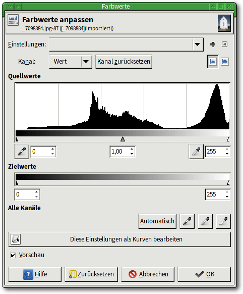
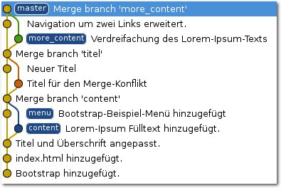
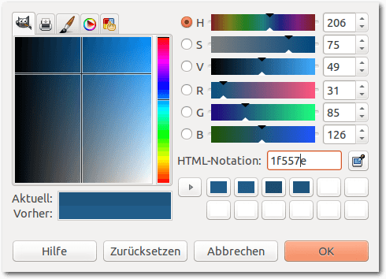

freiesMagazin Februar 2015
(ISSN 1867-7991)
Topthemen dieser Ausgabe
Fedora 21Kurz vor Weihnachten und dem Jahresende 2014 ist mit vierwöchiger Verspätung Fedora 21 erschienen. In diesem Artikel sollen die Neuerungen dieser Ausgabe erkundet werden. Dabei wird vor allem auf die GNOME- und KDE-Version von Fedora 21 eingegangen, es werden aber auch die neuen Varianten erklärt, die mit Fedora 21 das erste Mal veröffentlicht wurden. (weiterlesen)
Bildbearbeitung mit GIMP – Teil 2: Helligkeit und Kontrast anpassen
Auch bei guten Bildern besteht oft der Bedarf, die Helligkeit des Bildes zu verändern. Manchmal ist das gesamte Bild zu dunkel oder es sieht etwas „grau“ aus, weil die dunklen Bereiche nicht vollständig schwarz erscheinen. Genau für diese Art von Manipulationen wurden Bildbearbeitungsprogramme wie GIMP entwickelt. Sie verfügen daher über entsprechend viele Werkzeuge, mit denen diese Aufgaben erfüllt werden können. Der zweite Teil der GIMP-Reihe zeigt, wie man Helligkeit und Kontrast bei Bildern anpassen kann. (weiterlesen)
Octave – Teil 2: Funktionen, Graphen und komplexe Zahlen
Nachdem im ersten Teil die Grundfunktionen von Octave (siehe freiesMagazin 12/2014) beschrieben wurden, geht es im zweiten Teil der Reihe direkt mit praktischen Anwendungen weiter. Der Schwerpunkt liegt dieses Mal auf Funktionen und dem Plotten von Graphen in Octave. (weiterlesen)
Zum Inhaltsverzeichnis
Inhalt
Linux allgemein
Fedora 21
Der Januar im Kernelrückblick
Anleitungen
Bildbearbeitung mit GIMP – Teil 2
Git Tutorium – Teil 3
Octave – Teil 2
Kurztipp: Hintergrund einer Blaupause mit GIMP
Software
Suricata: Einbruchserkennung mit dem Erdmännchen
Community
Rezension: Praxisbuch Ubuntu Server 14.04 LTS
Rezension: Python – kurz & gut
Rezension: Einführung in Mathematica
Magazin
Editorial
Ende des siebten Programmierwettbewerbs
Leserbriefe
Veranstaltungen
Vorschau
Konventionen
Impressum
Zum Inhaltsverzeichnis
Editorial
User Liberation bei der FSF
Mit einem Video hat die Free Software Foundation ihren 30-jährigen Geburtstag eingeleitet, der 2015 ansteht. In dem Video wird auf die Befreiung der Nutzer durch Freie Software hingewiesen und die Vorteile von Quellcode-Zugriff angesprochen, sodass eine Untersuchung, Verbesserung und Verteilung der Software möglich ist [1]. Der Verschluss von Quellcode birgt eine gewisse Unsicherheit und auch externe Kontrolle, der man sich nicht entziehen kann. Daneben gibt es auch neue FSF-Badges, die jeder unter CC-Lizenz nutzen kann [2]. Herzlichen Glückwunsch zum 30-jährigen Bestehen wünscht freiesMagazin!Free Software. Free society. © FSF (CC-BY 4.0)
Galileo Press heißt nun Rheinwerk Verlag
freiesMagazin wird von zahlreichen Verlagen unterstützt, die uns Rezensionsexemplare zur Verfügung stellen, sodass wir damit das Magazin füllen und Leser informieren können. Einer dieser Verlage war bisher Galileo Press. Sie haben zahlreiche Bücher zu Linux-Themen im Angebot, wie man beinahe jeden Monat dem Magazin entnehmen kann, und unterstützen die Community, wann immer es möglich ist (z. B. durch Buchpreise und -spenden). Aus markenrechtlichen Gründen musste sich der Verlag umbenennen und heißt nun Rheinwerk Verlag [3]. Ansonsten ändert sich aber nichts, die Qualität der Bücher bleibt sicherlich auch in Zukunft gleich hoch und ebenso wird der Kontakt sehr freundlich und herzlich bleiben. An dieser Stelle wollen wir grundsätzlich einmal allen Mitarbeitern der Buchverlage danken, mit denen wir seit vielen Jahr in sehr gutem Kontakt stehen, sodass sogar manchmal Weihnachtskarten bei unserem Chefredakteur eintrudeln. Einen herzlichen Dank an Frau Behrens vom Rheinwerk Verlag, Frau Robels vom mitp-Verlag, Frau Pahrmann und Frau Bilstein vom O'Reilly Verlag sowie Frau Markgraf und Frau Rothe vom Carl Hanser Verlag. Wir wünschen allen Lesern viel Spaß mit der neuen Ausgabe Ihre freiesMagazin-Redaktion Links[1] https://www.fsf.org/blogs/community/user-liberation-watch-and-share-our-new-video
[2] https://www.fsf.org/resources/badges
[3] https://www.rheinwerk-verlag.de/umbenennung/
Beitrag teilen Beitrag kommentieren
Zum Inhaltsverzeichnis
Fedora 21
von Hans-Joachim Baader Kurz vor Weihnachten und dem Jahresende 2014 ist mit vierwöchiger Verspätung Fedora 21 erschienen. In diesem Artikel sollen die Neuerungen dieser Ausgabe erkundet werden. Redaktioneller Hinweis: Der Artikel „Fedora 21“ erschien erstmals bei Pro-Linux [1].Ein neues Konzept
Alles ist anders in Fedora 21. Ein volles statt dem üblichen halben Jahr ließ sich das Fedora-Team Zeit, um den Nachfolger von Fedora 20 (siehe freiesMagazin 02/2014 [2]) zu schaffen. Die Entwickler hatten diese Pause in Kauf genommen, um die Distribution grundlegend neu zu strukturieren. Die verlängerte Entwicklungszeit führte auch zu einer längeren Dauer der Unterstützung für Fedora 20 (und Fedora 19, dessen Lebensdauer aber nun beendet ist). Die Überlegung für das sogenannte Fedora.next [3] war, dass eine einzelne Variante einer Distribution nicht alle Einsatzbereiche optimal abdecken kann. Als wesentliche Einsatzbereiche wurden in der Folge Cloud, Server und Workstation identifiziert, und das sind die drei Varianten, in denen Fedora künftig erscheint. Die Fedora Spins, abgeleitete Distributionen für spezielle Einsatzzwecke oder spezifische Vorauswahl von Paketen, beruhen auf einem dieser Produkte und bleiben im Wesentlichen erhalten. Eine weitere Variante ist ein „Atomic-Server“, der nur eine minimale Auswahl von Paketen mitbringt und der mithilfe von rpm-ostree erstellt wurde. Das im April gestartete Projekt Atomic [4] hat das Ziel, eine Server-Umgebung zu schaffen, die speziell für den Einsatz von Docker optimiert ist.Willkommensbildschirm der Live-DVD von Fedora 21.
Überblick
Von den drei „Produkten“ soll nur die Workstation im Rahmen dieses Artikels behandelt werden. Es gibt allerdings auch interessante Neuerungen [5] in den anderen Varianten von Fedora 21. Die Cloud-Version bringt Images, die sowohl in privaten als auch in öffentlichen Clouds nutzbar sind. Durch die Aufteilung der Kernel-Module in ein kleines Paket, das auf die wenigen in der Cloud benötigten Treiber reduziert wurde, und ein Paket mit all den weiteren Treibern konnten die Images gegenüber Fedora 20 um 25% verkleinert werden. Fedora Server bringt zahlreiche neue Verwaltungswerkzeuge wie das webbasierte universelle Cockpit, Rolekit und OpenLMI. Der Server kann in eine Domain Controller-Rolle schlüpfen und bringt die integrierte Identitäts- und Authentifikationslösung FreeIPA [6] mit. Die gemeinsame Basis der drei Varianten von Fedora 21 sind die grundlegenden Pakete, vom Linux-Kernel 3.17 über das Installationsprogramm Anaconda, Systemd, RPM und einige mehr, die für sich allein aber noch keine benutzbare Distribution ergeben, sondern durch weitere Pakete ergänzt werden müssen. Der Vorteil dieser Basis ist, dass sie vergleichsweise klein ist und kaum Änderungen unterliegt. Das macht sie zu einer stabilen Plattform, auf die andere Initiativen aufbauen können. Die Desktop-Edition Fedora Workstation bringt die Desktop-Umgebung GNOME in Version 3.14. Andere Desktops stehen als „Spins“ zur Verfügung, darunter MATE 1.8 und das aktuelle KDE SC 4.14 mit den Bibliotheken des KDE Frameworks 5. Als weitere Desktopumgebungen stehen unter anderem Xfce 4.10, Cinnamon 2.4, LXDE und Sugar 0.102 zur Verfügung. Enlightenment ist immer noch in Version E17 mit dabei. GNOME 3.14 lässt sich fast ohne merkliche Einschränkungen mit Wayland verwenden, das als Technologievorschau dabei ist. Allerdings bleibt X11 noch bis mindestens Fedora 22 der Standard. Die Installation der Desktop-Edition soll besonders einfach vor sich gehen und im Wesentlichen nur aus der Festlegung der Partitionierung bestehen. Da Installationen von USB-Flash-Medien wesentlich komfortabler sind, haben die Entwickler auch ein neues Programm geschaffen, welches das Installations-Image nach dem Download ganz einfach auf das USB-Medium bringt. Einige neue Funktionen von Systemd 215 kommen ebenfalls zum Einsatz. So bietet jede Service-Datei zwei Schalter, welche die Sicherheit erhöhen können. Mit PrivateDevices=yes/no und PrivateNetwork=yes/no kann der Zugang zum Netz und der zu /dev nach Bedarf geregelt werden. Zudem kann das Journal dahin gehend konfiguriert werden, dass es Logs im Format von journald an andere Rechner ausliefert. Weitere Neuerungen von Systemd verbessern die Verwaltung von Docker-Containern. Weitere Aktualisierungen sind Make 4.0, Mono 3.4, PHP 5.6, Python 3.4, Ruby on Rails 4.1 und RPM 4.12.Installation
Fedora Workstation kann von Live-Images (für DVD oder USB-Stick) oder minimalen Bootmedien installiert werden. Die Installation erfordert mindestens 786 MB RAM, wie schon in Version 20. Mit weniger als 768 MB ist die Installation noch mit Einschränkungen möglich. Für den Betrieb werden mehr als 1 GB empfohlen. Die Installation hat sich gegenüber Fedora 20 kaum geändert und kann daher kurz abgehandelt werden. Sie beginnt mit der Sprachauswahl, bei der interessanterweise Deutsch als Voreinstellung angeboten wird. Woher der Installer diese Vorauswahl bezieht, bleibt unklar – vielleicht über irgendeine BIOS-Einstellung. Danach gelangt man zur Übersichtsseite. Hier ermittelt das Installationsprogramm im Hintergrund bereits einige Dinge, es steht einem aber frei, diese abzuändern, und zwar weitgehend in beliebiger Reihenfolge. Alle Punkte, die vom Benutzer zwingend noch bearbeitet werden müssen, sind mit einem gelben Warndreieck markiert. Die einzige zwingende Aktion ist die Auswahl des Installationsziels. Die erkannten Festplatten werden durch ein Icon angezeigt. Zu empfehlen ist noch die Auswahl der Tastaturbelegung. Hinter diesem Icon stehen alle Optionen zur Verfügung, einschließlich ungewöhnlicher Belegungen und Feineinstellungen. Auch die Software-Auswahl sollte man sich noch ansehen, wenn man nicht GNOME, sondern eine andere Oberfläche installieren will. Bei der Partitionierung sind die gewohnten Optionen wie die Verschlüsselung der gesamten Festplatte oder einzelner Partitionen, RAID und LVM vorhanden. Auch das Dateisystem Btrfs wird unterstützt, einschließlich seiner spezifischer Funktionen wie Subvolumes. Btrfs wird anscheinend nicht mehr als experimentell angesehen und ist eine der möglichen Optionen, wenn man die automatische Partitionierung wählt. Außer Btrfs sind auch „normale“ Partitionen und eine LVM-Installation möglich, letztere ist die Standardeinstellung. LVM- und Btrfs-Installation legen eine 500 MB große /boot-Partition mit dem Dateisystem ext4 an. Bei LVM wird der Rest als Root-Partition verwendet, mit btrfs wird eine separate /home-Partition angelegt, die sich aber aufgrund der besonderen Eigenschaften von Btrfs den Plattenplatz mit der Root-Partition teilt. Im Endeffekt ist diese Lösung noch flexibler als LVM. Während die Installation dann im Hintergrund läuft, muss man das Root-Passwort setzen und kann optional auch Benutzer anlegen. Nach der Installation ist keine weitere Konfiguration erforderlich, es startet direkt der Login-Manager, der die ausgewählte Desktopumgebung startet.Installation von Fedora 21: Übersicht.
Allgemeines Verhalten
Fedora 21 startet etwa genauso schnell wie sein Vorgänger. Wie immer ist SELinux eingebunden und aktiviert. Als normaler Benutzer merkt man überhaupt nichts davon, solange die Konfiguration korrekt ist. In Fedora 21 wie auch in der Vorversion trat kein sichtbares Problem im Zusammenhang mit SELinux auf. Für den Fall, dass ein Problem auftritt, sei es nach der Installation von zusätzlicher Software oder anderen Änderungen, steht ein Diagnosewerkzeug zur Verfügung. KDE benötigt in Fedora 21 direkt nach dem Start mit einem geöffneten Terminal-Fenster etwa 328 MB RAM, Gnome dagegen 456 MB, im Classic-Modus 427 MB. Manchmal kommen dazu noch weitere fast 200 MB durch den PackageKit-Daemon. Normalerweise sollte sich PackageKitd nach fünf Minuten beenden, wenn er nicht mehr benötigt wird. Doch das funktioniert aus unerfindlichen Gründen nicht immer. Vermutlich hält irgend etwas, das periodisch startet, den Daemon am Laufen. Anhand der Cron-Einträge war aber nicht zu erkennen, was es ist. Das ist auch kein Wunder, da Systemd nun auch einen teilweisen Ersatz für Cron darstellt und, wie man nach einigem Stöbern in der Konfiguration sehen kann, auch für den periodischen Start von DNF zur Aktualisierung des Caches verantwortlich ist. Doch die eigentliche Ursache für das PackageKitd-Problem war nicht zu finden. Bei der Geschwindigkeit sollte sich kein nennenswerter Unterschied zwischen den Desktops feststellen lassen, sofern genug RAM vorhanden ist und die sonstigen Voraussetzungen erfüllt sind. Die Angaben zum Speicherverbrauch sind nur als Anhaltswerte zu sehen, die sich je nach Hardware und Messzeitpunkt erheblich unterscheiden können.GNOME
GNOME 3.14 ist der Standard-Desktop von Fedora 21. Andere Desktops wie KDE, Xfce, LXDE oder andere stehen in den Repositorys von Fedora zur Verfügung; man muss sie entweder explizit anstelle von GNOME wählen oder auf einen der Fedora-Spins zurückgreifen. Gegenüber GNOME 3.10 in Fedora 20 sind unter anderem verbesserte Unterstützung für Touch-Gesten und Displays hoher Auflösung, ein überarbeiteter Dokumentenbetrachter, eine überarbeitete Wetter-App, die Unterstützung für Google Picture in der Fotoverwaltung Photo und eine automatische Handhabung für WiFi-Hotspots zu verzeichnen. Außerdem wurden die mitgelieferten Programme in vielen Punkten verbessert und aktualisiert. GNOME unterstützt jetzt Wayland weitgehend, was sich mit Fedora 21 auch testen lässt. Da es Wayland noch an grundlegenden Vorteilen gegenüber X fehlt, soll auf eine Betrachtung an dieser Stelle verzichtet werden. Das Theme Adwaita wurde vollständig neu geschrieben und bietet jetzt neue Menüleisten, animierte Schalter, verbesserte Benachrichtigungsdialoge und überarbeitete Spinner-Animationen. Der Gebrauch von Animationen wurde generell verstärkt.Übersichtsseite von GNOME.
Beim ersten Start von GNOME wird das Programm „Gnome Initial Setup“ gestartet, das das Setzen einiger Optionen und die Eingabe von Online-Konten ermöglicht. Alle Schritte können auch übersprungen und später ausgeführt werden. Der GNOME Login-Manager hat drei Sitzungen vordefiniert, wobei das Standard-GNOME die Voreinstellung ist. Die zweite Option ist GNOME Classic, die dritte ist GNOME unter Wayland. Wer das ausprobieren möchte, benötigt wahrscheinlich eine 3D-beschleunigte Grafikkarte von Intel, AMD oder NVIDIA. Der Standard-Webbrowser unter GNOME ist Firefox 34.0. Außer zwei Plug-ins sind keine Erweiterungen vorinstalliert. Dabei handelt es sich um die GNOME Shell-Integration und den iTunes Application Detector. Die Office-Suite LibreOffice ist in Version 4.3.4.1 installiert, aber nicht komplett. Fehlende Komponenten wie z. B. Base muss man bei Bedarf nachinstallieren. Die GNOME-Shell kann dank Software-Rendering auf jeder Hardware laufen, auch wenn keine Hardware-3D-Beschleunigung zur Verfügung steht. Das Software-Rendering ist einigermaßen schnell und durchaus noch benutzbar, doch wird man es wohl kaum ertragen, wenn man keinen sehr schnellen Prozessor hat. Die Situation bessert sich mit einem Mehrkern-Prozessor, doch Videos verzögerungsfrei abzuspielen, ist auf diese Weise schwer. Bei kleinen Videoformaten kann es aber noch gelingen. Bedauerlich ist, dass das gnome-tweak-tool, auf Deutsch Optimierungswerkzeug genannt, nicht standardmäßig installiert ist. Denn man benötigt es, um Erweiterungen für die GNOME-Shell zu installieren, da dafür kein Weg in der Standardkonfiguration vorhanden ist. Daneben kann man auch andere Dinge einstellen, die die GNOME-Entwickler nicht in der GUI konfigurierbar gemacht haben.
Das ist alles, was GNOME an Einstellungen anbietet.
Neu ist das Werkzeug DevAssistant [7], das Entwicklern helfen soll, Entwicklungsumgebungen für ihre Projekte einzurichten, sodass sie sich mehr auf das Schreiben von Code konzentrieren können. Da Entwickler viel mit Terminals arbeiten, wurde hier zusätzlicher Komfort eingebaut, unter anderem die Option eines transparenten Hintergrunds, automatische Aktualisierung des Titels, Umschalter zum Deaktivieren von Tastenkürzeln und Suche nach Terminals anhand des Namens in der GNOME-Desktop-Übersicht. Das hat zur Folge, dass das Terminal mehr Optionen anbietet, als der gesamte GNOME-Desktop. Das mag Entwickler freuen, normale Benutzer überzeugt man damit aber nicht. Eine Sitzungsverwaltung fehlt weiterhin. Zwar ist gnome-session in der Lage, Sitzungen zu speichern und wieder herzustellen, doch die Definition von Sitzungen ist nur über Konfigurationsdateien oder über das gnome-tweak-tool möglich. Möglicherweise funktioniert es auch nicht bei allen Programmen, und die Programme, bei denen es funktioniert, nehmen auch nicht den Zustand an, den sie zuletzt hatten, sondern werden lediglich gestartet und mit ihrem Fenster auf die letzte Position gesetzt. Alle Systemlogs werden über journald verwaltet. Das erfordert weiteres Umdenken, ist primär aber eine Vereinfachung, da der einfache Aufruf von journalctl bereits alle Logeinträge anzeigt. Diese kann man dann durchsuchen, filtern usw. – aber das unter Umständen lästige Suchen in mehreren Logdateien entfällt, ganz zu schweigen von den weiteren Vorteilen von Journald, die syslog mit einem Mal so alt aussehen lassen, wie es ist. Es gibt auch einen grafischen Logbetrachter – gnome-logs (deutscher Name: Protokolle), der allerdings nicht installiert ist und nur mit Yum oder DNF nachinstallierbar ist. Er bietet allerdings auch nur einfache Filtermöglichkeiten und dürfte einem Systemverwalter auf keinen Fall genügen.
KDE
KDE ist in Version 4.14.3 enthalten, aber seit Fedora 18 nur noch ein Spin. Die Installations-DVD entspricht ungefähr der Workstation-Variante. Beim ersten Start erscheinen die Texte in einem verqueren Mix aus Englisch und Deutsch, da offenbar nicht alle Übersetzungen installiert wurden. Die Anmeldung erfolgt nun mit dem neuen Anmeldemanager SDDM, den man durch KDM ersetzen kann, wenn man will. Der Standard-Webbrowser ist Konqueror, augenscheinlich ohne Änderungen an den Standardeinstellungen. Firefox ist dagegen nicht installiert. Ebenso fehlt LibreOffice, stattdessen ist die Calligra-Suite installiert. Installiert man Firefox nach, so präsentiert sich dieser ohne Erweiterungen oder Plug-ins.Login-Bildschirm von KDE.
KDE ist weiterhin angenehm zu benutzen und im Rahmen des Tests, der natürlich keine allzu großen Anforderungen stellt, fast problemlos. Im Gegensatz zu GNOME sind die traditionellen Bedienelemente unbeschädigt erhalten und es gibt Einstellungsmöglichkeiten bis ins kleinste Detail, ohne dass man etwas nachinstallieren muss. Die Anwendungen bieten einen großen Funktionsumfang und sind konfigurier- und erweiterbar. Nicht immer ist allerdings die Auswahl der mitgelieferten Anwendungen sinnvoll. Der Video-Player wird weiter unten noch erwähnt, aber auch Calligra scheint längst nicht so stabil zu sein, wie es sollte. Beim Schließen einer langen (MS Word-)Datei stürzte Calligra Words ab, obwohl nichts an der Datei geändert wurde. Der KDE-Spin nutzt noch nicht den Journald von Systemd für das Loggen, sondern installiert und startet weiterhin rsyslog. Die Bibliotheken des KDE Frameworks 5 sind vorhanden, sodass man Programme für die nächste Generation von KDE entwickeln, aber auch ablaufen lassen kann. Der Name der entsprechenden Pakete, die nicht vorinstalliert sind, beginnt mit kf5-.
Multimedia im Browser und auf dem Desktop
Wegen der Softwarepatente in den USA kann Fedora, ebenso wie die meisten anderen Distributionen, nur wenige Medienformate abspielen, da es viele benötigte Codecs nicht mitliefern kann. Die Lösung heißt wie immer RPM Fusion [8]. Diese Seite bietet zusätzliche Repositorys, die man leicht hinzufügen kann. Dies gilt für alle Desktops gleichermaßen. Die Installation funktioniert prinzipiell mit Konqueror und Firefox. Während unter GNOME die Installation reibungslos klappte, lieferten unter KDE sowohl Konqueror als auch Firefox am Ende eine Fehlermeldung, dass Apper ein Paket nicht finden konnte. Trotz dieser Meldung, die für Benutzer so aussieht, als wäre die Installation fehlgeschlagen, war aber alles installiert. Das kann eigentlich nur ein, möglicherweise neuer, Fehler in Apper sein. Die meisten Player bieten bekanntlich die Option an, über die Paketverwaltung nach passenden Plug-ins zu suchen. Das funktioniert jetzt endlich, der einzige Mangel ist, dass man meist die Anwendung neu starten muss, nachdem ein Plug-in installiert wurde. Wer sich auskennt, kann auch alle benötigten Codec-Pakete von Hand installieren. Sie sind sämtlich in Form von GStreamer-Plug-ins von RPM Fusion zu beziehen. Da sowohl die neue Version 1.4 von GStreamer als auch die Version 0.10 noch in Gebrauch sind, installiert man am besten die Codec-Sammlungen plugins-bad und plugins-ugly in allen Varianten für GStreamer 0.10 und GStreamer 1.4. Für GStreamer 0.10 benötigt man außerdem und vor allem das FFmpeg-Plug-in, für GStreamer 1.4 dessen Fork libav. Der Standard-Player für Audio und Video ist unter GNOME der Player „Videos“, früher Totem genannt. Unter KDE sind es Amarok und Dragonplayer. Während Amarok funktionierte, gab es bei Videos mit Dragonplayer wiederum Probleme. Der Ton war da, das Bild aber nicht. Es bleibt dabei, dass Dragonplayer zu Nichts zu gebrauchen ist. Man installiert stattdessen besser bewährte Programme wie (S)MPlayer, VLC oder Xine, die auch viel mehr Funktionalität aufweisen. Anders als in Ubuntu wird unter Fedora das von Cisco finanzierte OpenH264-Plugin, das ein freier Ersatz für das Adobe Flash-Plugin ist, nicht automatisch heruntergeladen. Die Gründe dafür [9] sind, dass der Binärcode des Plug-ins nicht in der Fedora-Infrastruktur kompiliert wurde, was die Paketrichtlinien verletzt, dass die Cisco-Lizenz den Benutzern nicht angezeigt werden konnte und dass die Cisco-Lizenz kommerzielle Nutzungen des Plug-ins verbietet, was die Fedora-Richtlinien verletzt. Man muss das Plug-in daher manuell herunterladen, falls man es nutzen will [10]. Nötig ist das aber in vielen Fällen nicht. Auch ohne Flash-Plug-in kommt Firefox in Fedora mit Flash-Videos klar, da der Browser mit GStreamer-Unterstützung kompiliert wurde und damit das ffmpeg-Plug-in nutzen kann. Getestete Seiten, die so funktionieren, sind unter anderem YouTube, Vimeo, Tagesschau.de und Heute.de.Paketverwaltung und Updates
Der Software-Installer ist seit Fedora 20 das Zentrum für Anwender, die zusätzliche Pakete für ihr System suchen. Das Programm wurde in dieser Version schneller und benutzerfreundlicher und bietet eine stark vergrößerte Paketauswahl an. Es ähnelt dem Software Center von Ubuntu, besitzt allerdings deutlich weniger Funktionalität. Für eine ernsthafte Systemverwaltung mit yum und RPM ist es kein Ersatz. Unter KDE kommt weiterhin Apper zum Einsatz, jetzt in Version 0.9.1. Apper ist im Gegensatz zu „Gnome-Software“ eine vollständige Paketverwaltung mit Paketquellen, Updates und Details bis auf die Paketebene. Sie kann die Kommandozeilenprogramme vollständig ersetzen, hat aber in der neuen Version offenbar einige neue Macken bekommen. Neben dem bereits erwähnten Phänomen funktionieren auch die Paketgruppen, die im Apper-Hauptbildschirm offeriert werden, nicht. Das Backend unterstütze die Operation „SearchGroups“ nicht, lautet die Meldung. Die gesamte Paketverwaltung baut unter GNOME und KDE grundsätzlich auf PackageKit auf. Sie funktioniert normalerweise reibungslos und die Updates, wenn sie auch zahlreich sind, sind dank Delta-RPMs oft erstaunlich klein und schnell installiert. Neu verfügbare Updates werden im Benachrichtigungsbereich angezeigt.Update-Benachrichtigung in KDE.
DNF, ein möglicher und teilweise schnellerer Ersatz für Yum, wurde von Version 0.4.10 auf 0.6.3 aktualisiert. Wie schon in Fedora 20 wird DNF parallel zu Yum installiert. Obwohl DNF nach Ansicht seiner Entwickler längst dieselbe Funktionalität wie Yum aufweist und bei einigen Operationen deutlich schneller als Yum ist, ist letzteres immer noch der Standard an der Kommandozeile. Das soll sich ändern, in Fedora 22 soll DNF 1.0 Yum ersetzen [11].
Neu in Fedora 21
Einige weitere Neuerungen lassen sich den Anmerkungen zur Veröffentlichung [5] entnehmen. Die Firewall in Fedora Workstation wurde „entwicklerfreundlicher“ gemacht, wie es die Entwickler ausdrücken. Ports unter 1024 sind aus Sicherheitsgründen mit Ausnahme des SSH-Ports und Client-Ports für Samba und DHCPv6 blockiert. Die Ports darüber sind jetzt aber standardmäßig offen. Das bringt nach Ansicht der Entwickler keine Sicherheitsprobleme, da auf diesen Ports normalerweise nichts nach außen lauscht. Trotzdem war die Änderung umstritten, denn die Nachinstallation eines Pakets könnte einen Dienst starten, der unbeabsichtigt von außen zugänglich ist. Selbstverständlich lässt sich das Verhalten aber ändern, Näheres findet man im Wiki [12]. NetworkManager kann nun mit Portalen umgehen, die Anfragen der Benutzer umleiten, um beispielsweise erst einmal ein kostenpflichtiges Log-in zu erzwingen. Man kann NetworkManager aber auch anweisen, die Behandlung dem Benutzer zu überlassen. Interessant sind für die Benutzer die zahlreichen Anwendungen, die Fedora in den Repositorys bereithält. Besonders sind dieses Mal Entwicklerwerkzeuge zu nennen. So wurde die Unterstützung für OpenCL verbessert und pocl aufgenommen. Es gab Updates von Ruby und Tcl/Tk und Erweiterungen der Scala-Entwicklungsumgebung. Für Java wird nicht nur das aktuelle Eclipse Luna angeboten, sondern OpenJDK 8 ist jetzt der Standard-Java-Compiler. Jenkins ist neu mit dabei und ReviewBoard wurde auf Version 2.0 aktualisiert. Außerdem wurde die Toolbox Shogun für maschinelles Lernen aufgenommen.Fazit
Fedora 21 weist überraschend wenig Veränderungen gegenüber dem Vorgänger auf, wenn man bedenkt, dass doppelt so viel Zeit vergangen ist wie üblich und das Fedora-Projekt tiefgreifende organisatorische Änderungen vornahm. In der Workstation-Distribution ist davon eigentlich nichts zu spüren. Die Entwicklung verlief kontinuierlich. Wie üblich gab es aber eine große Zahl von neuen Paketen und Aktualisierungen. So bleibt Fedora 21 Workstation eine Distribution von hoher Qualität, bei der es kaum etwas zu beanstanden gibt. Hat man erst einmal den ersten Schritt, die eigentliche Installation, gemeistert, geht es nur noch um Erweiterungen oder die Anpassung an die eigenen Präferenzen. Das ist aber bei jeder Desktop-Distribution der Fall. Fehler können besonders in der Anfangszeit von Fedora 21 auftreten, sind aber selten gravierend. Zudem werden viele anfängliche Fehler schnell behoben. Fedora bringt reichliche und häufige Updates und ist damit immer aktuell. Doch das ist auch die größte Schwäche der Distribution: Die Basis ändert sich ständig und es gibt keine Version mit langfristigem Support. Alle sechs Monate (sofern Fedora zum früheren Zyklus zurückkehrt) ist das Update auf die neueste Version Pflicht. Damit ist und bleibt Fedora eine der besten Distributionen für Entwickler und alle Benutzer, die immer die neueste Software wollen und auch kein Problem mit den Updates haben. Andere Benutzer sollten sich aber eher bei anderen Distributionen umsehen. Links[1] http://www.pro-linux.de/artikel/2/1744/fedora-21.html
[2] http://www.freiesmagazin.de/freiesMagazin-2014-02
[3] https://fedoraproject.org/wiki/Fedora.next
[4] http://projectatomic.io/
[5] http://fedoraproject.org/wiki/Releases/21/ChangeSet
[6] http://www.freeipa.org/
[7] http://devassistant.org/
[8] http://rpmfusion.org/
[9] https://fedorahosted.org/fesco/ticket/1359
[10] https://fedoraproject.org/wiki/OpenH264
[11] http://fedoraproject.org/wiki/Changes/ReplaceYumWithDNF
[12] https://fedoraproject.org/wiki/FirewallD
| Autoreninformation |
| Hans-Joachim Baader (Webseite) befasst sich seit 1993 mit Linux. 1994 schloss er erfolgreich sein Informatikstudium ab, machte die Softwareentwicklung zum Beruf und ist einer der Betreiber von Pro-Linux.de. |
Beitrag teilen Beitrag kommentieren
Zum Inhaltsverzeichnis
Der Januar im Kernelrückblick
von Mathias Menzer Basis aller Distributionen ist der Linux-Kernel, der fortwährend weiterentwickelt wird. Welche Geräte in einem halben Jahr unterstützt werden und welche Funktionen neu hinzukommen, erfährt man, wenn man den aktuellen Entwickler-Kernel im Auge behält.Linux 3.19
So richtig schien die Entwicklung von Linux 3.19 nicht in Schwung zu kommen, was in erster Linie den Weihnachtsfeiertagen und dem Jahreswechsel geschuldet war. So konnte es mit dem -rc3 [1] eigentlich nur vorwärts gehen und das war auch der Fall. Eine der größten Änderungen war das Entfernen eines Treibers für eine On-Chip-Netzwerkschnittstelle, der auf eine zuvor bereits entfernte Architektur angewiesen war. Auch die etwas verkürzte Woche zum Linux 3.19-rc4 [2] verlief sehr ruhig und konnte neben einem recht niedrigen Grundrauschen an Fehlerkorrekturen lediglich mit Aufräumarbeiten am Kernel Debugger und den Performance Counters [3] aufwarten. Die fünfte Entwicklerversion [4] brachte die Korrektur für einen Fehler in der Speicherverwaltung der ARM64-Architektur mit. Dazu kamen weitere Korrekturen an der ARM-Architektur und den Treibern, wobei das USB-Umfeld mit den größten Änderungen aufwartete. Je nach Betrachtungsweise fiel Linux 3.19-rc6 [5] dann schon wieder kleiner aus – die Zahl der Commits ging von über 300 auf 266 zurück, das Volumen der Änderungen selbst war jedoch leicht höher.Dave Jones: Jäger des verlorenen Fehlers
Eines der umtriebigsten Gesichter der Kernel-Entwickler-Gemeinde wechselte im Januar von Red Hat zu Akamai: Dave Jones. Trotz des Wechsels soll DaveJ weiterhin seine bisherigen Tätigkeiten in der Kernel-Entwicklung wahrnehmen. Das bedeutet insbesondere, dass er dem Kernel-Code mittels automatisierter Tests auf den Zahn fühlt und aufgetretene Probleme analysiert und behebt oder an den Maintainer des jeweiligen Subsystems weiterreicht. Gerade in den letzten Monaten machte Jones von sich reden, da er einem besonders hartnäckigen Fehler auf der Spur war (siehe „der November im Kernel-Rückblick“, freiesMagazin 12/2014). Im Zuge der Fehlersuche wurden einige Subsysteme des Kernels verdächtigt und es wurden dort auch einige Fehler bereinigt, jedoch tauchte das ursprüngliche Problem immer wieder auf. Zuletzt konnte das Problem von Linus Torvalds reproduziert werden, indem er direkt auf den für den High Precision Event Timer reservierten Speicherbereich schrieb. Damit scheint die Ursache dieses Problems gefunden. Jones stört sich jedoch noch an dem Punkt, dass sein Fuzzing-Tool Trinity [6] eigentlich die betreffende Speicherstelle gar nicht hätte beschreiben dürfen. Er nennt zwei mögliche Ursachen, um den Effekt trotzdem erklären zu können: Zum einen könnte Trinity die Adresse des HPET zufällig erzeugt und an einen Systemaufruf weiterreichen, der dann an diese Stelle schreibt. Seine zweite, etwas profanere Erklärung liegt in einem Hardware-Fehler: Jones fand mittlerweile Hinweise darauf, dass ein CPU-Problem den Zeitgeber aus dem Takt bringen konnte, wenn das System unter Last gerät. Letzteres wird er jedoch nicht mehr verifizieren können, da er die Hardware an seinen früheren Arbeitgeber zurückgegeben hat. Links[1] https://lkml.org/lkml/2015/1/5/787
[2] https://lkml.org/lkml/2015/1/11/190
[3] https://en.wikipedia.org/wiki/Perf_(Linux)
[4] https://lkml.org/lkml/2015/1/18/32
[5] https://lkml.org/lkml/2015/1/26/1
[6] http://codemonkey.org.uk/projects/trinity/
| Autoreninformation |
| Mathias Menzer (Webseite) behält die Entwicklung des Linux-Kernels im Blick, um über kommende Funktionen von Linux auf dem Laufenden zu bleiben. |
Beitrag teilen Beitrag kommentieren
Zum Inhaltsverzeichnis
Bildbearbeitung mit GIMP – Teil 2: Helligkeit und Kontrast anpassen
von Die GIMPer Auch bei guten Bildern besteht oft der Bedarf, die Helligkeit des Bildes zu verändern. Manchmal ist das gesamte Bild zu dunkel oder es sieht etwas „grau“ aus, weil die dunklen Bereiche nicht vollständig schwarz erscheinen. Genau für diese Art von Manipulationen wurden Bildbearbeitungsprogramme wie GIMP entwickelt. Sie verfügen daher über entsprechend viele Werkzeuge, mit denen diese Aufgaben erfüllt werden können. Der zweite Teil der GIMP-Reihe zeigt, wie man Helligkeit und Kontrast bei Bildern anpassen kann. Redaktioneller Hinweis: Dieser Text ist ein angepasster Auszug aus dem Buch „Bildbearbeitung mit GIMP – Die 101 wichtigsten Tipps: Teil 1 – Grundlegende Funktionen” [1]. Bevor man das geeignete Werkzeug für die Aufgabe der Helligkeitsanpassung findet, sollte man sich klar machen, worin die Aufgabe genau besteht:- Geht es darum, einzelne Bildteile oder ganze Bilder einheitlich zu bearbeiten? Im ersten Fall hat man zwei Möglichkeiten: Man kann die gewünschten Bildbereiche mit einer Auswahl begrenzen oder man kann mit feinen Malwerkzeugen die Retusche manuell vornehmen.
- Kennt man vielleicht schon ein Werkzeug oder ein Verfahren, mit dem man schon gute Erfahrungen bei der aktuellen Aufgabe gemacht hat, oder möchte man vielleicht etwas Neues ausprobieren?
- Für ganz einfache Fälle kann man auf das Werkzeug „Helligkeit und Kontrast anpassen“ zurückgreifen. Sind die Ansprüche etwas höher, wird man vermutlich das Werkzeug „Werte“ vorziehen.
- Bei Bildern, die insgesamt zu dunkel (oder hell) sind, liefert die „Ebenenmodimethode“ oft gute Ergebnisse.
- Sind die Helligkeiten insgesamt unglücklich verteilt, sollte man sein Glück mit dem Kurvenwerkzeug versuchen.
- Manchmal wirkt auch eine Kontrastmaske wahre Wunder und klart das gesamte Bild auf.
- Bei feinen Retuschen sind verschiedene Malwerkzeuge oft unschlagbar.
Tipp 48: Helligkeit und Kontrast anpassen
Im „Farben“-Menü findet sich als „Helligkeit/Kontrast …“ ein besonders einfaches Werkzeug, mit dem sich diese beiden Parameter in Bildern verändern lassen. Die gesamte Anwendung beschränkt sich auf das Einstellen zweier Schieberegler im sich öffnenden Dialog. Das Bildfenster zeigt dabei eine Vorschau.Helligkeit und Kontrast anpassen.
Dieses Werkzeug arbeitet ziemlich grob, sodass erfahrene Anwender es meistens meiden. Aber zwei Punkte sind bei diesem Werkzeug interessant:
- Unter „Einstellungen:“ findet sich eine Liste mit Daten, an denen das Werkzeug zuletzt verwendet wurde. Man kann in dieser Liste einen Eintrag auswählen und erhält dann die damit vorgenommenen Einstellungen. Sind diese für weitere Bilder interessant, so ermöglicht der kleine „+“-Button, den Einstellungen einen Namen zu geben, unter dem GIMP die Einstellungen dann dauerhaft speichert.
- Sollte man mit diesem Werkzeug keine ausreichenden Effekte erzielen können, so bietet der große Button „Diese Einstellungen als Werte bearbeiten“ eine Möglichkeit, das nächst-feinere Werte-Werkzeug (siehe unten) aufzurufen, ohne dass man die bereits vorgenommenen Änderungen rückgängig machen muss.
Tipp 49: Werte verändern
Mit GIMPs Werte-Werkzeug unter „Farben -> Werte …“ lassen sich die Helligkeiten in einem Bild auf intuitive Weise schnell – und effektiv – anpassen. Das Werkzeug besteht aus mehreren Teilen, die eng verzahnt zusammenwirken. Das Werte-Werkzeug verfügt über drei Regler zum Einstellen der Helligkeitsverteilung: dem Schwarzpunkt (links), dem Gamma-Wert und dem Weißpunkt (rechts).
Am oberen Rand befindet sich, wie bei vielen der Werkzeuge aus dem „Farben“-Menü, die Möglichkeit, vorgenommene Einstellungen zu speichern. Darunter („Kanal“) gibt es eine ebenfalls typische Möglichkeit, einen oder alle Farbkanäle einzeln zu bearbeiten. Die beiden Buttons am rechten Rand steuern, welche Form des Histogramms GIMP für die darunter folgenden Fenster verwendet. Voreingestellt ist meistens die lineare Form (links). Als Alternative bietet GIMP Ihnen ein logarithmisches Histogramm an. Die Arbeit mit dem Werte-Werkzeug ist recht einfach: Zunächst verschiebt man den linken Regler (das kleine schwarze Dreieck unter dem Histogramm) so weit nach rechts, bis der Bereich erreicht ist, wo das Histogramm die ersten Helligkeiten (Häufigkeiten größer als Null, die Linie also sichtbar wird) aufweist. Diese Aktion bewirkt, dass GIMP alle Helligkeiten unterhalb des eingestellten Wertes als ganz Schwarz (Helligkeit Null) abbildet und entsprechend die Helligkeiten aller anderen Werte um diesen Betrag reduziert. Diese Aktion wird auch als „Verschieben des Schwarzpunktes“ bezeichnet. Im nächsten Schritt wiederholt man das Entsprechende mit dem Regler für die großen Helligkeiten am rechten Rand. Man stellt ihn so ein, dass die hellsten Bereiche in reinem Weiß (Helligkeit maximal) erscheinen. Dies wird als „Verschieben des Weißpunktes“ bezeichnet. Danach hat man die Möglichkeit, die „Stimmung“ des Bildes mit dem mittleren (Gamma-)Regler zu verändern. Dies „verschiebt das Gamma“. Man sollte die Vorschau im Bildfenster nutzen und zunächst nur kleine Anpassungen vornehmen. Hinweis: Ob man die besseren Ergebnisse erzielt, wenn man zunächst (oder ausschließlich) den Werte-Kanal bearbeitet oder die einzelnen Farbkanäle separat, hängt von mehreren Faktoren (im Wesentlichen vom aktuellen Bild, aber auch von der eigenen Erfahrung) ab. Das Werte-Werkzeug bietet aber noch einiges mehr: Unterhalb des „Quellwerte“-Histogramms finden Sie zwei Pipetten. Klickt man zunächst auf dieses Symbol, wandelt GIMP den Mauszeiger entsprechend um. In diesem Modus kann man spezielle Farben – oder wie hier Helligkeiten – aus dem Bildfenster in das Werkzeug übernehmen. Mit der linken Pipette legt man den Schwarzpunkt, mit der rechten den Weißpunkt fest. Das kann GIMP auch automatisch erledigen. Dazu genügt ein Mausklick auf den Button „Automatisch“. Alternativ stehen einem hier auch drei Pipetten zur Verfügung, um die automatisch ermittelten Werte noch anzupassen. Dazu klickt man mit der entsprechenden Pipette für den Schwarzpunkt, das Gamma oder den Weißpunkt dort in das Bild, wo man die Helligkeit übernehmen will. Man kann dies auch mehrfach machen, wenn es erforderlich ist. Als letztes sollte man den Button „Diese Einstellungen als Kurven bearbeiten“ kennen. Er aktiviert das Kurvenwerkzeug (siehe unten), mit dem sich die feinsten Helligkeitsanpassungen vornehmen lassen.
Tipp 50: Das Kurvenwerkzeug einsetzen
GIMPs Kurvenwerkzeug (auch „Gradationskurven“ genannt) unter „Farben -> Kurven“ dient zur besonders feinen Anpassung von Helligkeiten. Dazu erlaubt es, die Farbkanäle einzeln oder die Helligkeit insgesamt durch beliebige Abbildungskurven zu manipulieren. Es erweitert die Funktion des Werte-Werkzeugs um eine wesentliche Möglichkeit, sodass erfahrene Anwender normalerweise mit dem hier beschriebenen Werkzeug arbeiten.Das Kurvenwerkzeug erlaubt, die Helligkeiten in einzelnen Kanälen oder insgesamt zu manipulieren.
Wie beim Werte-Werkzeug zeigt der Dialog im oberen Teil – unter dem Dateinamen des aktuellen Bildes – die Möglichkeit, Einstellungen zu speichern. Es folgt unter „Kanal:“ die Auswahl des zu bearbeitenden Kanals. „Wert“ steht dabei für die Kombination aus Rot, Grün und Blau. Das darunter erscheinende Fenster stellt ein Histogramm dar, dessen Form – linear oder logarithmisch – die beiden rechts darüber angeordneten Button umschalten. Zwei Farbbalken am linken und unteren Rand sowie die schwarze Linie auf dem Histogramm steuern, wie die Farben bzw. Helligkeiten umgesetzt werden. Horizontal sind die Eingangswerte, vertikal die daraus resultierenden Ausgabewerte dargestellt. Der Verlauf der Linie steuert, wie die Umsetzung im Detail erfolgt: Von einem Eingangswert geht man gerade nach oben, bis man die Linie erreicht und dann direkt nach links. Dort findet man den resultierenden Ausgabewert. Solange die Linie eine gerade Diagonale ist, ändern sich die Werte nicht, wohl aber, sobald die Kurve verformt wird.
Wie das Kurvenwerkzeug wirkt, erklärt dieses Bild. Der hier gezeigte Kurvenverlauf wird in den meisten Fällen übertrieben sein.
Die Anwendung des Kurvenwerkzeugs erfolgt analog zum Werte-Werkzeug: Zunächst sollte man den Schwarzpunkt festlegen. Dazu verschiebt man den linken Bezugspunkt des Kurvenwerkzeugs so weit nach rechts, bis sich das Histogramm von der X-Achse erhebt. Analog kann man den Weißpunkt verschieben, was allerdings nicht immer sinnvoll oder erforderlich ist. Das Gamma gibt es in der klassischen Form, wie im Werte-Werkzeug nicht mehr. Dafür kann man die Linie aber beliebig verformen. Ein Mausklick auf die Linie erzeugt einen neuen Stützpunkt. Überflüssige Stützpunkte verschiebt man einfach an linken oder rechten den Rand, um sie zu löschen. Normalerweise erzeugen leicht gekrümmte, liegende „S-Kurven“ kontrastreiche und gut ausgeleuchtete Bilder. Natürlich hängt das Ergebnis ganz wesentlich vom Ausgangsbild ab. Um die Helligkeiten eines ganz bestimmen Bereichs im Bild – beispielsweise in den Schatten im Vordergrund – anzupassen, geht man wie folgt vor: Man klickt nach dem Öffnen der Kurven mit der Maus auf die entsprechende Stelle im Bild. In dem Moment erzeugt GIMP eine vertikale Linie im Kurvenwerkzeug, die genau die dort im Bildfenster vorhandene Helligkeit anzeigt. Die Kurve kann nun den Wünschen entsprechend angepasst werden. Hinweis: Man kann auch mit ganz „unlogischen“ Kurven arbeiten und erhält dann surreale Ergebnisse, beispielsweise eine „Solarisation“.
Durch die links gezeigte Kurve erzeugt man den Solarisations-Effekt.
Hinweis: Die hellsten bzw. dunkelsten Bereiche in einem Bild findet man mit dem Schwellwerte-Werkzeug.
Tipp 51: Die Ebenenmodimethode anwenden
Besonders bei sehr dunklen Bildern lassen sich oft gute Ergebnisse auf eine ganz einfache Weise erzielen. Hierfür benötigt man zwei identische Ebenen, die mittels eines speziellen „Ebenenmodus“ so miteinander verrechnet werden, dass die dunklen Bereiche stärker aufgehellt werden als hellere. Hierzu geht man wie folgt vor:- Zunächst lädt man das gewünschte Bild.
- Dann dupliziert man die Ebene. Das geschieht am schnellsten im Ebenendock mit einem Klick auf den mittleren Button oder über das Menü „Ebene -> Ebene duplizieren“.
- Danach ändert man den Ebenenmodus der oberen Ebene auf „Bildschirm“.
Originalbild (links) und verbesserte Version, in der sich zusätzliche Details in den dunklen Bereichen zeigen.
Hinweis: Bemerkenswert ist bei dieser Methode der geringe Arbeitsaufwand und das interessante Ergebnis. Während eine Anpassung der Kurven auch die helleren Bereiche im Hintergrund weiter aufgehellt hätte, geschieht das mit dieser Methode kaum. Dieser Effekt kann noch verstärkt werden, indem man die obere Ebene nochmals dupliziert. Falls das Duplizieren einen zu starken Effekt hat, setzt man einfach die Deckkraft der oberen Ebene herunter.
Tipp 52: Feine Retuschen mit Malwerkzeugen durchführen
Immer wenn es darum geht, einzelne Teile von Bildern sehr gezielt zu verändern, sollte man überlegen, ob dafür nicht Malwerkzeuge in Frage kommen. Bei Retuschen dieser Art kann man die unterschiedlichsten Veränderungen vornehmen. Im Folgenden beschränkt sich die Betrachtung jedoch zunächst nur auf gezielte Anpassungen der Helligkeiten. GIMP verfügt über ein spezielles Werkzeug für diese Aufgaben, welches „Abwedeln/Nachbelichten“-Werkzeug genannt wird. Der Name des Werkzeugs leitet sich dabei von der Fotochemie ab. In einem Fotolabor wurden zwei Techniken verwendet, um die Helligkeiten beim Erstellen der Abzüge kontrolliert anzupassen:- Beim „Abwedeln“ bewegte der Laborant während der Belichtung schnell einen Papierstreifen über das zu belichtende Positiv. Dadurch fiel auf diese Flächen weniger Licht, das Bild wurde dort heller (es ist ein „Umkehrprozess“!).
- Für das „Nachbelichten“ wurde eine Schablone mit weichem Rand erstellt, die auf das Bild gelegt wurde. Anschließend wurde das Bild ein zweites Mal belichtet. Die nicht abgedeckten Teile wurden dadurch dunkler.
Mit dem Malwerkzeug Abwedeln/Nachbelichten“ lassen sich mit einem (weichen) Pinsel genaue Retuschen der Helligkeiten vornehmen.
Wichtig ist noch die Einstellung unter „Umfang“: Dort legt man fest, auf welche Helligkeiten das Werkzeug wirken soll. Mit „Schatten“ wirkt es besonders stark auf dunkle Bildteile, mit „Glanzlichter“ auf die sehr hellen. Die Optionen dieses Werkzeugs sind so umfangreich, dass sie sich auf kleinen Monitoren nur partiell oder an anderer Position anzeigen lassen. Hinweis: Dieses Werkzeug wird zusammen mit dem Verschmieren-Werkzeug besonders gern zur Bearbeitung von Portraits eingesetzt. Dort erlaubt es durch das Aufhellen von Falten, unauffällig kleinere Schönheitskorrekturen vorzunehmen. Hinweis: Oft ist es bei der Verwendung von Malwerkzeugen eine gute Idee, nicht das Bild selbst, sondern eine (Ebenen-) Kopie zu bearbeiten, um später gegebenenfalls noch Teile aus dem Originalbild übernehmen zu können.
Mit einem Malwerkzeug lassen sich die noch im Bild vorhandenen feinen Details – in den dunklen Bereichen – ganz gezielt herausarbeiten.
Tipp 53: Eine Kontrastmaske nutzen
Eine „Kontrastmaske“ hilft, starke Helligkeitsunterschiede in Bildern so aufzubereiten, dass das Ergebnis deutlich ausgewogener erscheint. Meistens wird diese Methode bei Bildern mit deutlich zu dunklen Bereichen eingesetzt. Es gibt viele Möglichkeiten, eine Kontrastmaske zu erzeugen. Neben G'MIC, das einen speziellen Filter dafür mitbringt („Contrast Swiss Mask“ genannt), lässt sich dieser Effekt auch schnell und einfach selbst erstellen. In diesem Fall hat man die Möglichkeit, auf alle Parameter Einfluss zu nehmen und alles im Detail steuern zu können. Es sind nur sehr wenige Schritte zum Erstellen einer Kontrastmaske erforderlich:- Zuerst lädt man das gewünschte Bild.
- Dann dupliziert man die Ebene. Das geschieht z. B. im Ebenendock mit dem mittleren Button oder über „Ebene -> Ebene duplizieren“.
- Über „Farben -> Entsättigen“ entsättigt man diese Ebene, die dann schwarz-weiß ist.
- Diese schwarz-weiße Ebene invertiert man über „Farben -> Invertieren“.
- Nun zeichnet man das Ergebnis etwas weicher. Das geschieht normalerweise mit dem Filter „Gaußscher Weichzeichner“ aus dem Menü „Filter -> Weichzeichnen“.
- Zuletzt ändert man den Ebenenmodus auf „Bildschirm“.
Die selbst erstellte Kontrastmaske hilft in diesem Beispiel die zu dunklen Bereiche aufzuhellen, ohne dass die Lichter ausbrennen.
Tipp 54: G'MICs „Contrast Swiss Mask“ verwenden
Der Filter „G'MIC“ gehört mit zu den wichtigsten Erweiterungen für GIMP und wird daher von erfahrenen Anwendern meistens gleich mit installiert. Seine besondere Stärke besteht in der Vielzahl zusätzlich verfügbarer Filter, die für ganz unterschiedliche Aufgaben entwickelt wurden. Die meisten dieser Filter bieten eine gute Vorschau und liefern mit relativ geringem Aufwand gute Resultate. Um die „Contrast Swiss Mask“ anzuwenden, geht man wie folgt vor:- Zuerst lädt man das gewünschte Bild.
- Danach ruft man den Filter über „Filter -> G'MIC -> Light & Shadows -> Contrast swiss mask“ auf.
- Nun wählt man noch einen geeigneten Ausgabemodus unter „Eingabe/Ausgabe -> Neue Ebene(n)“.
G'MICs-Filter sind in vielen Kategorien eingeordnet, „Contrast Swiss Mask“ findet man unter „Light & Shadows“.
„OK“ schließt den Dialog und berechnet das Ergebnis, „Anwenden“ hat den gleichen Effekt, ohne den Dialog zu schließen. Hinweis: Dieser Filter wirkt auf die angegebene Weise nur solange die Option „Skip to use the mask to boost“ nicht aktiviert ist. Mit dieser Option erhält man den gegenteiligen Effekt. Die dann erzeugten Ebenen weisen sehr harte Kontraste auf. Unter „Merge the Mask“ stellt man ein, wie stark GIMP die Maske mit dem Originalbild verrechnen soll.
G'MIC verfügt gleich über mehrere Filter, die unterschiedliche Kontrastmasken erzeugen können: Originalbild (links), „Contrast Swiss Mask“ (Mitte), „Local Contrast Enhancement“ (rechts).
Links
[1] http://www.bookrix.de/_ebook-wilber-gimper-bildbearbeitung-mit-gimp-die-101-wichtigsten-tipps/
| Autoreninformation |
| Die GIMPer sind eine wechselnde Gruppe von GIMP-Freunden und -Nutzern, die das Programm für ihre Kunstprojekte, Arbeit oder Hobby einsetzen und versuchen, alle wesentlichen Aspekte zu beleuchten. |
Beitrag teilen Beitrag kommentieren
Zum Inhaltsverzeichnis
Git Tutorium – Teil 3
von Sujeevan Vijayakumaran Im zweiten Teil des Git-Tutoriums (siehe freiesMagazin 01/2015 [1]) wurde ein Überblick über das Branching-Modell gegeben. Dieser dritte Teil rundet den Einstieg in Git ab, womit man für die gängigsten Aufgaben gewappnet sein sollte. Dies umfasst zum einen das Rebasing und zum anderen das Arbeiten mit Remote-Repositorys.Rebasing
Das Rebasing gehört ebenfalls zum Branching-Modell von Git. Im vorherigen Teil des Tutoriums wurde Branches mit dem git merge Befehl zusammengeführt. Eine andere Art der Zusammenführung von Branches ist das Rebasing. Beim normalen Mergen werden beide Branches zusammengeführt und gegebenenfalls ein Merge-Commit erzeugt. Anders sieht es beim Rebasing aus: In diesem Fall werden die Commits aus einem Branch einzeln auf den Haupt-Branch angewendet. Ein Unterschied zum normalen Merge ist, dass in der Historie des Repositorys beziehungsweise des Branches keine der vorherigen angelegten Branches mehr sichtbar sind. Um die Funktionsweise besser zu erläutern, folgt das erste Beispiel, wofür wieder jeweils ein Commit auf zwei Branches gebraucht wird. Zunächst muss man sicherstellen, dass man sich auf dem Branch master befindet, von dem man dann den zweiten Branch namens more_content anlegt.$ git checkout master
$ git checkout -b more_content
Auf diesem Branch muss man nun in der Datei index.html ein wenig mehr Inhalt
hinzufügen. Dazu reicht es, etwa den Lorem-Ipsum Text in dem <p>-Tag zu
verdreifachen. Die Änderung kann dann wieder wie gewohnt durch einen Commit übernommen werden.
$ git checkout -b more_content
$ git add index.html
$ git commit -m "Verdreifachung des Lorem-Ipsum-Texts"
[more_content 609f8a4] Verdreifachung des Lorem-Ipsum-Texts
1 file changed, 6 insertions(+)
Einen Commit auf dem Branch more_content gibt es an dieser Stelle somit auch
schon. Jetzt muss man zunächst mit dem Befehl git checkout master wieder
zurück auf den Branch master wechseln und dort einen Commit erzeugen.
In der Datei index.html kann man nun für den ersten Commit in der Navigation
folgende Zeile verdreifachen:
$ git commit -m "Verdreifachung des Lorem-Ipsum-Texts"
[more_content 609f8a4] Verdreifachung des Lorem-Ipsum-Texts
1 file changed, 6 insertions(+)
<li><a href="#">Link</a></li>
Anschließend kann man den ersten Commit tätigen:
$ git add index.html
$ git commit -m "Navigation um zwei Links erweitert."
[master 8d8d6ce] Navigation um zwei Links erweitert.
1 file changed, 2 insertions(+)
Im zweiten Teil dieser Artikel-Reihe hätte man an dieser Stelle einen Merge
gemacht. Konkret würde bei einem git merge more_content der eine Commit aus
dem Branch more_content in den Branch master gemergt und es würde
zusätzlich ein weiterer Merge-Commit entstehen.
$ git commit -m "Navigation um zwei Links erweitert."
[master 8d8d6ce] Navigation um zwei Links erweitert.
1 file changed, 2 insertions(+)
So sähe die Zusammenführung der Branches bei einem normalen Merge aus.
Den Merge-Commit möchte man beim Rebasen allerdings vermeiden. Ziel des Rebasing ist es, dass man den ursprünglichen Entwicklungsbranch nicht mehr sieht und er dann aussieht wie ein gerader Entwicklungs-Strang. Hier stellt sich natürlich die Frage, was jetzt die genauen Vorteile und auch Nachteile vom Rebasen gegenüber dem Mergen ist. Wie bereits oben im Text erwähnt, werden die Commits einzeln auf dem Branch neu angewendet. Die genaue Funktion wird klarer, wenn man es einmal durchgeführt hat. Hierfür wechselt man zunächst zurück auf den Branch more_content und macht dort den Rebase.
$ git checkout more_content
$ git rebase master
Zunächst wird der Branch zurückgespult, um Ihre Änderungen
darauf neu anzuwenden...
Wende an: Verdreifachung des Lorem-Ipsum-Texts
Wenn man also auf dem Branch more_content ist und die Änderungen aus dem
Branch master übernehmen möchte ohne einen Merge-Commit zu haben, dann muss
man git rebase master ausführen. Wie man aus der Terminal-Ausgabe ablesen
kann, wird der Branch zunächst „zurückgespult“, das heißt, dass in diesem
Schritt die gemachten Änderungen vorübergehend zurückgenommen
werden. Anschließend übernimmt Git die Commits aus dem anderen Branch, in
diesem Fall aus dem Branch master. Zum Schluss werden die Commits vom Branch
einzeln wieder angewandt. Da es sich in diesem Beispiel um lediglich einen
Commit handelt, wird auch nur dieser angewandt.
Klarer wird es, wenn man sich die Commits auf einem Branch als einen Stapel
vorstellt. Beim Rebase wird auf more_content sozusagen jeder Commit vom
Stapel genommen, bis man einen gemeinsamen Commit vom Branch master gefunden
hat. An diesem Punkt werden dann die neuen Commits von master wieder auf
more_content gestapelt. Anschließend werden die vorläufig entfernten Commits
auf more_content wieder einzeln auf den Commit-Stapel gelegt.
Jetzt lohnt sich ein Blick in das Log. Relevant sind lediglich die letzten drei
Commits, welche man sich mit dem Parameter -n 3 für den aktuellen Branch
anzeigen lassen kann.
$ git rebase master
Zunächst wird der Branch zurückgespult, um Ihre Änderungen
darauf neu anzuwenden...
Wende an: Verdreifachung des Lorem-Ipsum-Texts
$ git log -n 3
commit 27bf2ae348279599cfa67fd0631e7f3e5c90840d
Author: Sujeevan Vijayakumaran <mail@svij.org>
Date: Sun Jan 4 19:03:23 2015 +0100
Verdreifachung des Lorem-Ipsum-Texts
commit 8d8d6ce271ddf776def806bbe65c1439c84f8c67
Author: Sujeevan Vijayakumaran <mail@svij.org>
Date: Sun Jan 4 19:12:42 2015 +0100
Navigation um zwei Links erweitert.
commit aa2fbe6716f743d434a0f7bec9b97548304338c8
Merge: b967fa1 b6781c8
Author: Sujeevan Vijayakumaran <mail@svij.org>
Date: Sun Jan 4 15:54:15 2015 +0100
Merge branch 'titel'
Conflicts:
index.html
Im Git-Log steht oben immer der neueste Commit auf dem Branch. Wer jetzt
allerdings genau hinsieht, merkt, dass der oberste Commit um 19:03 Uhr
getätigt wurde und der Commit darunter um 19:12 Uhr. Zeitlich betrachtet ist
also der vorletzte Commit der neueste Commit, während der echte neueste Commit
zeitlich vorher erzeugt wurde. Dies ist eine Eigenschaft, die genau dann beim
Rebasen zustande kommt. In der Historie eines Git-Repositorys sind die Commits
nämlich immer in logische Reihenfolge und diese ist nicht zwangsläufig auch die
zeitlich richtige Reihenfolge. Es stellt sich für viele vermutlich an dieser
Stelle die Frage: Warum brauche ich das?
Beim Entwickeln von Software werden häufig einzelne Features gleichzeitig
entwickelt. Wenn etwa der Branch master nur vollständige und somit fertige
Features enthält, dann werden dort immer nur die Änderungen zusammengeführt,
wenn die Branches fertig sind. Wenn man allerdings an einem größeren Feature
entwickelt, welches durchaus längere Zeit braucht, dann zweigt man
beispielsweise vom Branch master ab und entwickelt für eine Zeit dort sein
Feature. Über die Zeit hinweg läuft allerdings auch die Entwicklung auf dem
Branch master weiter, was heißt, dass diese beiden Entwicklungszweige
gegebenenfalls immer stärker divergieren. Ein Konflikt-freies Mergen beider
Branches nach längerer Entwicklungszeit ist dann gegebenenfalls nicht mehr so
einfach möglich. Wenn man nun auf dem Entwicklungsbranch ein Rebase
durchführt, dann sind da auch alle Änderungen von master enthalten. Dieses
Vorgehen ist auch dann sinnvoll, wenn der Entwickler auf dem Entwicklungsbranch die
Änderungen aus master braucht. Unschön wäre hier ein Merge, da man in der
Historie beim mehrmaligen Mergen von master diverse Merge-Commits besitzt,
die man durch das Rebasen einfach vermeiden kann.
Nach dem Rebase möchte man die Änderungen vom Branch more_content
letztendlich auch in master übernehmen. Hierfür reicht dann wieder ein
normaler Merge:
commit 27bf2ae348279599cfa67fd0631e7f3e5c90840d
Author: Sujeevan Vijayakumaran <mail@svij.org>
Date: Sun Jan 4 19:03:23 2015 +0100
Verdreifachung des Lorem-Ipsum-Texts
commit 8d8d6ce271ddf776def806bbe65c1439c84f8c67
Author: Sujeevan Vijayakumaran <mail@svij.org>
Date: Sun Jan 4 19:12:42 2015 +0100
Navigation um zwei Links erweitert.
commit aa2fbe6716f743d434a0f7bec9b97548304338c8
Merge: b967fa1 b6781c8
Author: Sujeevan Vijayakumaran <mail@svij.org>
Date: Sun Jan 4 15:54:15 2015 +0100
Merge branch 'titel'
Conflicts:
index.html
$ git checkout master
$ git merge more_content
Aktualisiere 8d8d6ce..27bf2ae
Fast-forward
index.html | 6 ++++++
1 file changed, 6 insertions(+)
Der Merge ist dann ein Fast-Forward Merge. Wenn man nun erneut in das Git Log
von master schaut, dann sieht man keinerlei Informationen mehr von der
Existenz des Branches more_content. Rebasing lohnt sich also auch für
Experimentier-Branches, dessen Namen man hinterher nicht mehr in der Historie
lesen möchte.
$ git merge more_content
Aktualisiere 8d8d6ce..27bf2ae
Fast-forward
index.html | 6 ++++++
1 file changed, 6 insertions(+)
Sowohl master als auch more_content sind nach dem Rebase und Merge identisch.
Zum Schluss stellt sich noch die Frage, wann man Rebasen und wann man Mergen sollte. Als kleine Grundregel kann man sich merken, dass man immer dann Rebasen sollte, wenn man zeitgleich laufende Änderungen regelmäßig aus einem anderen Branch auch in seinen eigenen Entwicklungsbranch hineinholen möchte. Ein Merge sollte man hingegen dann machen, wenn man fertige Entwicklungsbranches in einen der Hauptentwicklungsbranches zusammenführen möchte. Weder das eine noch das andere lässt sich problemlos jedes Mal durchführen, sodass es häufig auch auf die jeweilige Situation ankommt, ob man nun rebased oder mergt.
Remote-Repositorys
Eine weitere große Stärke von Git ist, dass man ein Repository auf vielen verschiedenen Rechnern verteilen kann. Es ist daher ein verteiltes Versionsverwaltungsprogramm. Ein vollständiges Git-Repository kann an vielen verschiedenen Orten liegen. Diejenigen, welche das Git-Repository mit den zuvor angegebenen Befehlen angelegt haben, besitzen zur Zeit nur ein lokales Repository. Wichtig für das Verständnis ist, dass in der Theorie jedes Git-Repository mit jedem gleichgestellt ist. In der Praxis sieht das allerdings etwas anders aus, da bei den meisten Projekten mit einem zentralen Server gearbeitet wird. Entfernt liegende Repositorys nennt man Remote-Repositorys. Um mit eben diesen zu arbeiten, gibt es den Befehl git remote. Wenn keine Remote-Repositorys hinzugefügt worden sind, wie bei diesem Beispiel-Repository, dann erfolgt keine Ausgabe beim Ausführen des Kommandos. Es bietet sich grundsätzlich immer an, mit Remote-Repositorys zu arbeiten. Ein Projekt, dessen Git-Repository nur auf einem lokalen Rechner liegt, ist kaum vor Ausfällen gesichert. Remote-Repositorys sind insbesondere deshalb nützlich, weil man damit einfach kollaborativ arbeiten kann. Um die Arbeitsweise mit Remote-Repositorys zu verstehen und zu erlernen, werden zunächst einige Remote-Repositorys angelegt, die auf dem lokalen Rechner liegen. In einem Projekt mit mehreren Personen gibt es meist ein zentrales Repository für das gesamte Projekt sowie einzelne Repositorys für die jeweiligen Projekt-Mitarbeiter. Man nehme also an, dass es in diesem Beispiel-Webseiten-Projekt zwei Mitarbeiter gibt: „Ich“ und „Er“. Dazu wechselt man erst in den Projektordner Webseite-mit-Git, anschließend legt man die entsprechenden Repositorys an:$ mkdir ~/Git
$ git clone --bare . ~/Git/Webseite-mit-Git.git
Klone in Bare-Repository '/home/sujee/Git/Webseite-mit-Git.git'...
Fertig.
$ git clone --bare . ~/Git/Er.git
Klone in Bare-Repository '/home/sujee/Git/Er.git'...
Fertig.
$ git clone --bare . ~/Git/Ich.git
Klone in Bare-Repository '/home/sujee/Git/Ich.git'...
Fertig.
Der Befehl git clone klont, also kopiert, das ganze Repository. Es nimmt in
diesem Fall das aktuelle Projekt und speichert es dann in unter dem lokalen
Pfad ~/Git/. Die Inhalte aller Ordner sind zu Beginn identisch und enthalten
das .git-Verzeichnis des Projekts.
Hinweis: Das oben erläuterte Anlegen von Repositorys ist keine alltägliche
Form. Es dient lediglich dazu, das Arbeiten
mit Remote-Repositorys zu erläutern, was auch geht, wenn die Repositorys lokal
auf dem Rechner liegen. In der Regel setzt man eigene Git-Server-Dienste auf
oder nutzt externe Dienste wie GitHub [2] oder
Bitbucket [3], wo man sowohl private als auch
öffentliche Repositorys anlegen kann. Auf eine genauere Anleitung wird an
dieser Stelle zunächst verzichtet, um den Rahmen des Tutoriums nicht zu
sprengen.
Jetzt ist es an der Zeit, die Remote-Repositorys mit dem Projekt zu verbinden.
Im Projekt-Ordner Webseite-mit-Git fügt man also zunächst sein privates
Repository als Remote hinzu.
$ git clone --bare . ~/Git/Webseite-mit-Git.git
Klone in Bare-Repository '/home/sujee/Git/Webseite-mit-Git.git'...
Fertig.
$ git clone --bare . ~/Git/Er.git
Klone in Bare-Repository '/home/sujee/Git/Er.git'...
Fertig.
$ git clone --bare . ~/Git/Ich.git
Klone in Bare-Repository '/home/sujee/Git/Ich.git'...
Fertig.
$ git remote add origin ~/Git/ich.git
Dieses Kommando setzt sich aus mehreren Teilen zusammen. Der erste Parameter
remote bezieht sich auf Remote-Repository-Feature von Git. Das darauf folgende add gibt
an, dass man ein Remote-Repository hinzufügen möchte. Der Parameter add
verlangt wiederum zwei Parameter, das wäre zum einen der Name des Repositorys und zum anderen
der Pfad zum Repository. Der Pfad zum entfernten Repository kann auch über SSH,
HTTPS oder über das Git-Protokoll erfolgen. Das eigene Repository wird in der
Regel origin genannt, dort sollte man auch volle Schreibrechte besitzen.
Weiterhin bietet es sich nun an, die übrigen Remote-Repositorys hinzuzufügen,
das wären upstream und er. Das Repository upstream soll das gemeinsame
Repository beider Mitarbeiter sein, auf dem die fertige Webseite kollaborativ
erarbeitet werden soll:
$ git remote add upstream ~/Git/Webseite-mit-Git.git
$ git remote add er ~/Git/Er.git
Der Befehl git remote sollte nun drei Remotes anzeigen.
$ git remote add er ~/Git/Er.git
$ git remote
er
origin
upstream
Bis jetzt wurde Git nur bekanntgegeben, dass es diese Remote-Repositorys gibt.
Die Inhalte wurden noch nicht in das lokale Repository heruntergeladen. Dafür gibt
es das Git-Kommando fetch. Damit kann man die
Bestandteile eines Remote-Repositorys herunterladen.
er
origin
upstream
$ git fetch upstream
Von /home/sujee/Git/Webseite-mit-Git
* [neuer Branch] content -> upstream/content
* [neuer Branch] master -> upstream/master
* [neuer Branch] menu -> upstream/menu
* [neuer Branch] more_content -> upstream/more_content
Wie man aus der Ausgabe herauslesen kann, wurden die Branches master,
content, menu und more_content vom Repository upstream
heruntergeladen. Da es sehr mühselig wäre, für jedes Remote-Repository einzeln
git fetch aufzurufen, gibt es auch eine Möglichkeit, alle
Remote-Repositorys in einem Rutsch herunterzuladen:
Von /home/sujee/Git/Webseite-mit-Git
* [neuer Branch] content -> upstream/content
* [neuer Branch] master -> upstream/master
* [neuer Branch] menu -> upstream/menu
* [neuer Branch] more_content -> upstream/more_content
$ git remote update
Fordere an von upstream
Fordere an von er
Von /home/sujee/Git/Er
* [neuer Branch] content -> er/content
* [neuer Branch] master -> er/master
* [neuer Branch] menu -> er/menu
* [neuer Branch] more_content -> er/more_content
Fordere an von origin
Von /home/sujee/Git/ich
* [neuer Branch] content -> origin/content
* [neuer Branch] master -> origin/master
* [neuer Branch] menu -> origin/menu
* [neuer Branch] more_content -> origin/more_content
Alternativ kann man auch git fetch --all ausführen, welches denselben Effekt
hat.
Die Remote-Repositorys sind nun vollständig konfiguriert und liegen auch lokal
im Projekt-Ordner. Praktisch ist, dass man zwischen den einzelnen
Branches der Repositorys wechseln kann.
Mittlerweile wurden zwar einige Remote-Repositorys hinzugefügt, allerdings kann
man durchaus die vergebenen Namen nachschlagen. Es reicht, lediglich folgenden
Befehl auszuführen:
Fordere an von upstream
Fordere an von er
Von /home/sujee/Git/Er
* [neuer Branch] content -> er/content
* [neuer Branch] master -> er/master
* [neuer Branch] menu -> er/menu
* [neuer Branch] more_content -> er/more_content
Fordere an von origin
Von /home/sujee/Git/ich
* [neuer Branch] content -> origin/content
* [neuer Branch] master -> origin/master
* [neuer Branch] menu -> origin/menu
* [neuer Branch] more_content -> origin/more_content
$ git remote
er
origin
upstream
Wenn man eine ausführlichere Ausgabe möchte, etwa die Adresse des
Remote-Repositorys, dann kann man dem Befehl den Parameter -v übergeben.
er
origin
upstream
$ git remote -v
er /home/sujee/Git/Er.git (fetch)
er /home/sujee/Git/Er.git (push)
origin /home/sujee/Git/Ich.git (fetch)
origin /home/sujee/Git/Ich.git (push)
upstream /home/sujee/Git/Webseite-mit-Git.git (fetch)
upstream /home/sujee/Git/Webseite-mit-Git.git (push)
Aktuell sind sowohl das lokale als auch die entfernten
Repositorys auf demselben Stand.
Jetzt ist es notwendig, einen weiteren Commit zu tätigen. In diesem Beispiel
nummeriert man einfach alle Links in der Navigation aus der Datei
index.html, sodass man hinterher in der Navigation nicht mehr 4x „Link“
stehen hat, sondern „Link 1“ bis „Link 4“. Anschließend erzeugt man wieder einen
Commit mit dieser Änderung.
er /home/sujee/Git/Er.git (fetch)
er /home/sujee/Git/Er.git (push)
origin /home/sujee/Git/Ich.git (fetch)
origin /home/sujee/Git/Ich.git (push)
upstream /home/sujee/Git/Webseite-mit-Git.git (fetch)
upstream /home/sujee/Git/Webseite-mit-Git.git (push)
$ git add index.html
$ git commit -m "Links in der Navigation durchnummeriert."
[master 59b89eb] Links in der Navigation durchnummeriert.
1 file changed, 4 insertions(+), 4 deletions(-)
Damit ist zwar ein Commit angelegt worden, diesen möchte man allerdings noch in
das entfernt liegende Repository pushen. Dies ist ein gängiges Prozedere, um
die Änderungen online zu bringen, etwa um mit anderen zu kollaborieren oder um
seine Arbeiten zu sichern.
Jetzt könnte man den Push-Befehl ausführen:
$ git commit -m "Links in der Navigation durchnummeriert."
[master 59b89eb] Links in der Navigation durchnummeriert.
1 file changed, 4 insertions(+), 4 deletions(-)
$ git push
fatal: Der aktuelle Branch master hat keinen Upstream-Branch.
Um den aktuellen Branch zu versenden und den Remote-Branch
als Upstream-Branch zu setzen, benutzen Sie
git push --set-upstream origin master
Wenn man git push ohne jeglichen Parameter ausführt, dann versucht Git den
aktuellen Branch auf das Remote-Repository zu übertragen. Allerdings tut Git das
nur, wenn ein sogenannter Upstream-Branch gesetzt ist. Wie die Aussage oben
aussagt, muss man hierfür einen Upstream-Branch einrichten.
fatal: Der aktuelle Branch master hat keinen Upstream-Branch.
Um den aktuellen Branch zu versenden und den Remote-Branch
als Upstream-Branch zu setzen, benutzen Sie
git push --set-upstream origin master
$ git push --set-upstream origin master
Zähle Objekte: 3, Fertig.
Delta compression using up to 4 threads.
Komprimiere Objekte: 100% (3/3), Fertig.
Schreibe Objekte: 100% (3/3), 408 bytes | 0 bytes/s, Fertig.
Total 3 (delta 1), reused 0 (delta 0)
To /home/sujee/Git/Ich.git
27bf2ae..59b89eb master -> master
Branch master konfiguriert zum Folgen von Remote-Branch master von origin.
Der Parameter --set-upstream lässt sich ebenfalls in einer kürzeren Variante
ausführen, dies ist dann schlicht der Parameter -u. Der Befehl führt zwei
Dinge aus: Zum einen pusht er der den Branch master zum Remote-Repository
namens origin und zum anderen verknüpft Git den lokalen Branch mit dem
Remote-Branch auf origin.
Zähle Objekte: 3, Fertig.
Delta compression using up to 4 threads.
Komprimiere Objekte: 100% (3/3), Fertig.
Schreibe Objekte: 100% (3/3), 408 bytes | 0 bytes/s, Fertig.
Total 3 (delta 1), reused 0 (delta 0)
To /home/sujee/Git/Ich.git
27bf2ae..59b89eb master -> master
Branch master konfiguriert zum Folgen von Remote-Branch master von origin.
Sowohl master als auch origin/master haben einen Commit mehr als die übrigen Branches.
Wenn man nun nur noch git push ausführt, dann wird automatisch der aktuelle lokale Branch master nach origin übertragen, sofern Änderungen vorhanden sind.
$ git push origin master
Everything up-to-date.
Mittlerweile liegen im Repository vier Branches, wovon bereits alle Änderungen
gemergt worden sind und keine mehr gebraucht werden. Diese lassen sich ganz
einfach mit dem folgenden Befehl löschen:
Everything up-to-date.
$ git branch -d content
$ git branch -d menu more_content
Man kann das Löschen sowohl einzeln durchführen oder auch gesammelt innerhalb
eines Kommandos, wie es oben angegeben ist. Übrig bleibt lediglich der Branch
master. Wichtig zu wissen ist, dass hiermit ausschließlich die lokalen
Branches gelöscht worden sind. Wenn man nun auch noch auf dem Remote-Repository
die Branches löschen möchte, muss man Folgendes ausführen:
$ git branch -d menu more_content
$ git push origin --delete content
To /home/sujee/Git/Ich.git
- [deleted] content
$ git push origin :menu
To /home/sujee/Git/Ich.git
- [deleted] menu
$ git push origin --delete more_content
To /home/sujee/Git/Ich.git
- [deleted] more_content
Wie man sieht, gibt es zwei verschiedene Möglichkeiten, Remote-Branches zu
löschen: Das wäre zum einen das git push Kommando mit dem Parameter
--delete und dem Namen des Remote-Branches und zum anderen kann man mit
git push auch mit einem Doppelpunkt vor dem Branch-Namen den Remote-Branch
löschen. Klarer und deutlicher ist vor allem die erste Variante. Auch dieser
Befehl lässt sich zusammenfassen, sodass man auch einfach folgenden Befehl
hätte ausführen können:
To /home/sujee/Git/Ich.git
- [deleted] content
$ git push origin :menu
To /home/sujee/Git/Ich.git
- [deleted] menu
$ git push origin --delete more_content
To /home/sujee/Git/Ich.git
- [deleted] more_content
$ git push origin :menu :more_content :content
Folgender Befehl zeigt relevante Informationen von einem konfigurierten
Remote-Repository an:
$ git remote show origin
* Remote-Repository origin
URL zum Abholen: /home/sujee/Git/Ich.git
URL zum Versenden: /home/sujee/Git/Ich.git
Hauptbranch: master
Remote-Branch:
master gefolgt
Lokaler Branch konfiguriert für 'git pull':
master führt mit Remote-Branch master zusammen
Lokale Referenz konfiguriert für 'git push':
master versendet nach master (aktuell)
Wenn man einen Namen von einem Remote-Repository lokal
ändern möchte, kann man auch folgenden Befehl ausführen:
* Remote-Repository origin
URL zum Abholen: /home/sujee/Git/Ich.git
URL zum Versenden: /home/sujee/Git/Ich.git
Hauptbranch: master
Remote-Branch:
master gefolgt
Lokaler Branch konfiguriert für 'git pull':
master führt mit Remote-Branch master zusammen
Lokale Referenz konfiguriert für 'git push':
master versendet nach master (aktuell)
$ git remote rename er jemand
In diesem Fall wird dann der Name von er auf jemand geändert.
Remote-Repositorys kann man auch einfach wieder entfernen:
$ git remote rm jemand
Der Befehl liefert im Erfolgsfall keine Ausgabe. An diesem Punkt ist wichtig zu
wissen, dass nur die Verknüpfung im lokalen Repository gelöscht wird. Auf dem
entfernt liegenden Server sind weiterhin die Daten vorhanden, sofern diese
nicht schon vorher gelöscht worden sind.
Zum Schluss muss man nur noch das korrekte Arbeiten mit Remote-Branches
verstehen. Nach der vorangegangenen Aufräumaktion sind noch zwei
Remote-Repositorys übrig: origin und upstream. Auf origin befindet
sich nur noch der Branch master, auf upstream befinden sich noch alle
vier Branches, wobei dort master noch nicht auf dem aktuellen Stand ist.
Um master auch auf dem Remote-Repository namens upstream zu pushen:
$ git push upstream
Zähle Objekte: 3, Fertig.
Delta compression using up to 4 threads.
Komprimiere Objekte: 100% (3/3), Fertig.
Schreibe Objekte: 100% (3/3), 408 bytes | 0 bytes/s, Fertig.
Total 3 (delta 1), reused 0 (delta 0)
To /home/sujee/Git/Webseite-mit-Git.git
27bf2ae..59b89eb master -> master
Da kein Branch-Name angegeben wurde, wird der Branch gepusht, auf dem man
sich gerade befindet.
Jetzt steht nur noch an, dass man einen bestimmten Branch von upstream lokal
auschecken möchte. Die Remote-Branches folgen einem Muster, nämlich
<Remote>/<Branch-Name>. Wenn man also den Branch content auschecken
möchte, reicht es folgenden Befehl auszuführen:
Zähle Objekte: 3, Fertig.
Delta compression using up to 4 threads.
Komprimiere Objekte: 100% (3/3), Fertig.
Schreibe Objekte: 100% (3/3), 408 bytes | 0 bytes/s, Fertig.
Total 3 (delta 1), reused 0 (delta 0)
To /home/sujee/Git/Webseite-mit-Git.git
27bf2ae..59b89eb master -> master
$ git checkout upstream/content
Note: checking out 'upstream/content'.
You are in 'detached HEAD' state. You can look around, make experimental
changes and commit them, and you can discard any commits you make in this
state without impacting any branches by performing another checkout.
If you want to create a new branch to retain commits you create, you may
do so (now or later) by using -b with the checkout command again. Example:
git checkout -b new_branch_name
HEAD ist jetzt bei e39da6e... Lorem-Ipsum Fülltext hinzugefügt.
Das Problem hier ist, dass man in einem anderen Zustand landet, der sich
detached HEAD nennt. Wie der Text schon aussagt, ist es ein Zustand, in dem
man zwar Commits machen kann, allerdings sind diese keinem Branch zugeordnet.
Dies wird deutlich, wenn man git branch ausführt:
Note: checking out 'upstream/content'.
You are in 'detached HEAD' state. You can look around, make experimental
changes and commit them, and you can discard any commits you make in this
state without impacting any branches by performing another checkout.
If you want to create a new branch to retain commits you create, you may
do so (now or later) by using -b with the checkout command again. Example:
git checkout -b new_branch_name
HEAD ist jetzt bei e39da6e... Lorem-Ipsum Fülltext hinzugefügt.
$ git branch
* (losgelöst von upstream/content)
master
Der Zustand ist allerdings weniger problematisch, da man sich einfach einen
neuen Branch anlegen kann, basierend auf dem Branch upstream/content:
* (losgelöst von upstream/content)
master
$ git checkout -b content
Zu neuem Branch 'content' gewechselt
So ist man nun wieder auf einem normalen Branch in einem normalen Zustand. Wenn
man nun die Änderungen von einem Remote-Branch auch lokal haben möchte, kann
man diese mit git pull herunterladen. Der Pull-Befehl ist das Gegenstück vom
Push-Befehl.
Zu neuem Branch 'content' gewechselt
$ git pull
There is no tracking information for the current branch.
Please specify which branch you want to merge with.
See git-pull(1) for details
git pull <remote> <branch>
If you wish to set tracking information for this branch you can do so with:
git branch --set-upstream-to=<remote>/<branch> content
Wie auch beim ersten Push-Befehl fehlt dem lokalen Branch die Verknüpfung,
woher die Änderungen heruntergeladen werden sollen. Wenn man nur einmalig die
Änderungen von upstream/content holen möchte, reicht es,
git pull upstream content auszuführen. Wenn man hingegen häufiger aus
demselben Branch vom selben Repository pullen möchte, dann bietet sich die oben
aufgeführte zweite Variante an.
There is no tracking information for the current branch.
Please specify which branch you want to merge with.
See git-pull(1) for details
git pull <remote> <branch>
If you wish to set tracking information for this branch you can do so with:
git branch --set-upstream-to=<remote>/<branch> content
Fazit
In diesem Teil der Artikel-Reihe zu Git wurde erläutert, was das Rebasen ist, wie es geht und warum man es nutzt. Weiterhin kann man jetzt mit Remote-Repositorys arbeiten und zwischen verschiedenen Remote-Repositorys pullen und pushen. Links[1] http://www.freiesmagazin.de/freiesMagazin-2015-01
[2] https://github.com
[3] https://bitbucket.org/
| Autoreninformation |
| Sujeevan Vijayakumaran (Webseite) nutzt seit drei Jahren Git als Versionsverwaltung nicht nur zur Software-Entwicklung, sondern auch für das Schreiben von Artikeln. |
Beitrag teilen Beitrag kommentieren
Zum Inhaltsverzeichnis
Octave – Teil 2: Funktionen, Graphen und komplexe Zahlen
von Jens Dörpinghaus Nachdem im ersten Teil die Grundfunktionen von Octave (siehe freiesMagazin 12/2014 [1]) beschrieben wurden, geht es nun direkt mit praktischen Anwendungen weiter: Der Schwerpunkt liegt in diesem Teil auf Funktionen und dem Plotten von Graphen. Beides sind Bereiche, die auch in der Schule schon von Nutzen sein können, spätestens aber in einer Ausbildung oder einem Studium mit naturwissenschaftlichem oder mathematischen Bezug wichtig sind.Funktionen und Grafiken
Als erstes Beispiel, um den Umgang mit Funktionen zu lernen, soll ein normaler Funktionsgraph geplottet werden. Man legt dazu eine Funktion in Octave an – die Namensgleichheit an dieser Stelle ist nicht zufällig. In der Mathematik ist eine Funktion eine Abbildung von einem Wertebereich W in einen Zielbereich Z (z. B. W→ Z oder oft R → R) in der Form
|
function y = f(x)
y = x.^2;
end
Listing: f.m
Dabei sollte man der Übersicht halber nicht mehr als eine Funktion in eine Datei
legen und dafür sorgen, dass der Dateiname jeweils dem Funktionsnamen
entspricht.
function und end sind in dem Skript sogenannte Schlüsselwörter, die Octave
anzeigen, dass hier eine Funktion anfängt und mit end beendet wird. Nach dem
Schlüsselwort function wird zunächst der Rückgabewert der Funktion angegeben und
nach dem Gleichheitszeichen der Name der Funktion und in Klammern die Parameter
der Funktion. Die Namen sind mehr oder weniger frei wählbar, man darf aber keine
Schlüsselwörter verwenden. y und x sind in diesem Fall Variablen. Auch
diese haben hier eine ähnliche Funktion wie in der Mathematik: Sie werden erst
zur Laufzeit mit einem bestimmten Wert gefüllt. In diesem Fall ist y am Ende
x zum Quadrat. Das kann man im Befehlsfenster ausprobieren, nachdem man die
Datei gespeichert hat:
y = x.^2;
end
>> f(2)
ans = 4
>> f(3)
ans = 9
>> f(4)
ans = 16
Man muss für y natürlich nicht die quadratische Funktion verwenden. Man kann
z. B. weitere Datei g.m erstellen:
ans = 4
>> f(3)
ans = 9
>> f(4)
ans = 16
function y = g(x)
y = x.^3;
end
Listing: g.m
Diese heißt nun g und kann genauso getestet werden.
Um die Funktion f zu plotten, also als Grafik darzustellen, muss man zunächst
einen Bereich der x-Achse festlegen. Ohne diesen kann Octave nicht
entscheiden, auf welchem Bereich die Funktion dargestellt werden soll. Wählt man
beispielsweise das Intervall [−10,10], so geschieht dies folgendermaßen
y = x.^3;
end
>> x=-10:0.1:10;
Diese Schreibweise muss erklärt werden. Die Doppelpunktschreibweise erlaubt es,
eine Liste von x-Werten von −10 bis 10 (das sind die beiden äußeren Werte)
in 0,1-Schritten zu erzeugen. Man kann sich die Liste mit
>> disp(x)
anzeigen lassen. Das eigentliche Plotten geschieht nun mit
>> plot (x,f(x))
recht simpel. Man muss aber noch einmal festhalten, dass man
in 0,1-Schritten plottet und die Funktion nicht kontinuierlich gezeichnet
wird. So ähnlich zeichnet man eine Funktion auch per Hand: Man berechnet erst
einige Werte der Funktion f für bestimmte x-Werte und verbindet diese dann.
Die Liste von Funktionswerten zu den x-Werten der Liste berechnet Octave mit
f(x). Per Hand kann man den Verlauf besser korrigieren; Octave verbindet die
Werte schlicht mit geraden Linien. Man kann testweise den Wert von x ersetzen,
z. B. mit 2-er Schritten:
>> x=-10:2:10;
Plottet man erneut, sieht man nun deutlich die „Ecken“ im Graphen.
Plot von f(x)=x2 mit Schrittgröße 0,1 auf der x-Achse.
Plot von f(x)=x2 mit Schrittgröße 2 auf der x-Achse.
Es gibt eine dritte Option für den Befehl plot, sie definiert die Darstellung. Standardmäßig werden die Werte mit Geraden verbunden, das ist die Option -. Gestrichelte Linien erhält man mit -- und gepunktete mit :. Einzelne Wertepunkte erhält man z. B. mit o. Es kann ein Farbwert (etwa k, r, g) folgen.
| Mögliche Werte für das Plotten | ||
| Linie | Datenpunkte | Farbe |
| verbunden (-) | Fadenkreuz (+) | Schwarz (k) |
| gestrichelt (--) | o Kreis (o) | Rot (r) |
| gepunktet (:) | * Stern (*) | Grün (g) |
| . Punkt (.) | Blau (b) | |
>> help plot
Nun kann man mit diesen Werten experimentieren, beispielsweise
>> plot (x, f(x), ':c');
>> plot (x, f(x), 'ok');
Man kann an dieser Stelle hinzufügen, dass die einfachen Anführungszeichen einen
Text beschreiben. Dies ist wichtig, denn ein Text gibt Octave an, dass er hier
weder eine Variable noch eine Zahl zu erwarten hat. Dem Befehl plot kann man
aber auch mehrere Funktionen übergeben:
>> plot (x, f(x), 'ok');
>> plot (x, f(x), '-', x, g(x), '-');
Und um die Ausgabe ein bisschen aussagekräftiger zu machen, kann man die
Achsenbezeichnungen ergänzen:
>> xlabel('x-Achse');
>> ylabel('y-Achse');
>> ylabel('y-Achse');
Der fertige Plot mit Legende und Achsenbezeichnungen.
Eine Legende wird mit
>> legend('f(x)=x^2', 'g(x)=x^3');
hinzugefügt. Dabei entsprechen die Parameter in der Reihenfolge der dem
plot-Befehl übergebenen Funktionen. Die Darstellung kann vielfältig angepasst
werden. An dieser Stelle sei aber auf einen späteren Abschnitt oder für ganz
Eilige wieder auf die help-Funktion verwiesen.
Man kann nun das Grafikfenster einer genaueren Betrachtung unterziehen. Mit der
Maus kann man nicht nur Wertepaare erfahren, die in der Fußzeile angezeigt
werden, sondern auch zoomen und den Bildausschnitt verschieben. Der Button „A“
in der linken unteren Ecke führt dann zur Ausgangsdarstellung zurück. Mit dem
Button „G“ kann man Hilfslinien anzeigen. Um die Abbildung weiter zu verwenden,
kann man sie mit „File -> Save“ als PDF, PostScript, PNG oder JPG exportieren.
Zum selber experimentieren kann man nun verschiedene Funktionen testen:
- Plotten der Funktion h(x)=[1/2]x2−12 und wählen von verschiedenen x-Achsenabschnitten. Was fällt dabei auf?
- Erstellen einer Wertetabelle für die Funktion h(x)=sin(x)+1 auf dem Intervall [−10,10] mit Abständen von 1. Was fällt auf, wenn man die mit der Hand gezeichnete Funktion mit der durch den plot-Befehl in Octave gezeichnete Funktion vergleicht? Wie kann der Plot verbessert werden?
- Plotten der drei Funktionen f1(x)=x2, f2(x)=x2+1 und f3(x)=x2+3 in einem Koordinatensystem inklusive aller notwendigen Beschriftungen.
Ebenen im Raum, Plotten von mehrdimensionalen Funktionen
Eine Ebene im Raum ist eine lineare Funktion der Form R3 → R3 mit f(x,y)=z. Für das Plotten mehrdimensionaler Funktionen müssen aber noch einige Dinge beachtet werden. Man betrachte die Funktion
|
>> x=-10:1:10;
>> y = x;
>> plot3(x,y,2*x+3*y);
liefert leider nur eine Gerade, da für jeden x-Wert der entsprechende y-Wert
ausgewählt wird und dies auf der x−y-Ebene eine Gerade ergibt. Der folgende
Plot, in dem alle y-Werte 0 sind, zeigt dies anschaulich:
>> y = x;
>> plot3(x,y,2*x+3*y);
>> plot3(x,y,0*x,'o');

Der Plot von x=y=-10:1:10;, ohne meshgrid.
Es reicht also nicht, nur die x- und y-Werte als Liste zu bekommen, man braucht ein ganzes Netz. Daher ist der Befehl meshgrid eine gute Wahl:
>> [XX, YY] = meshgrid(x,y);
Hier wird mit den beiden x- und y-Achsenabschnitten in die beiden Matrizen
XX und YY ein Netz von gleichmäßigen Punkten generiert. Konkret bestehen die
Variablen x und y aus Listen, und meshgrid schreibt in die neuen
Variablen
alle Kombinationsmöglichkeiten der Einträge dieser beiden Listen. Anschaulich
wird das Ganze, wenn man es zeichnet:
>> plot3(XX,YY,0*XX,'o');
Jetzt sind die Grundlagen gelegt, damit die Ebene gezeichnet werden kann:
>> plot3(XX,YY,2*XX+3*YY,'-');
Der Plot von x=y=-10:1:10; und dem dazugehörigen, mit meshgrid erzeugten Gitter.
Das Problem ist nun, dass dies immer noch nicht einer richtigen Fläche entspricht, da alle Werte nur wie eine normale Funktion miteinander verbunden sind. Die Möglichkeit, die Flächen zu triangulieren, gibt es mit plot3 nicht, wohl aber mit dem Befehl mesh:
>> mesh(XX,YY,2*XX+3*YY);
liefert das gewünschte Ergebnis. Die Farben entsprechen dabei den Werten der
z-Achse. Hier wird allerdings nur ein Gitter gezeichnet. Wenn man die
Flächen füllen möchte, nutzt man den Befehl surf:
>> surf(XX,YY,2*XX+3*YY);
Es sei noch erwähnt, das man neben den von plot und plot3 schon bekannten
Befehlen wie xlabel auch den Befehl colorbar verwendet kann, um eine Legende für
die Farben im Graph anzuzeigen.
Das Resultat von mesh.
Das Resultat von surf mit colorbar.
Nun ist alles Handwerkzeug zusammen, um auch andere Funktionen zu plotten. Zunächst müssen – wie im Zweidimensionalen – die Achsenabschnitte mit ihren Schrittgrößen definiert werden. Bei Abbildungen von R2 → R muss daraus noch ein Netz gebildet werden. Danach kann die Funktion mit mesh oder surf geplottet werden. Beispiele sind etwa
>> surf(XX,YY,XX.^2-(YY.^2));
>> surf(XX,YY,sin(XX)-cos(YY));
>> surf(XX,YY,sin(XX)-cos(YY));
Plot einer 3D-Funktion mit zu grober Netzweite.
Bei letzterer Funktion sieht man das Resultat eines zu groben Netzes. Wählt man die Schritte kleiner, bekommt man ein besseres Ergebnis:
>> x=-10:0.1:10;
>> y = x;
>> [XX, YY] = meshgrid(x,y);
>> surf(XX,YY,sin(XX)-cos(YY));
>> y = x;
>> [XX, YY] = meshgrid(x,y);
>> surf(XX,YY,sin(XX)-cos(YY));
Plot einer 3D-Funktion mit angepasster Netzweite.
Hier ist also ein wenig Handarbeit angesagt, um ein optimales Ergebnis zu bekommen. Beliebige andere Funktionen, die in drei Dimensionen dargestellt werden können, kann man natürlich genauso plotten.
Komplexe Zahlen
Komplexe Zahlen sind Zahlen der Form
|
>> sqrt(-1)
ans = 0 + 1i
liefert auch direkt die entsprechende Notation. Dabei ist es unerheblich, ob das
mathematische i oder das aus der Physik bekannte j genutzt wird, da Octave
beides zu i überträgt.
ans = 0 + 1i
>> 4+2j
ans = 4 + 2i
>> z=4+2i
z = 4 + 2i
Der Real- und Imaginärteil kann dabei mit den beiden einfachen Funktionen
imag und real erhalten werden:
ans = 4 + 2i
>> z=4+2i
z = 4 + 2i
>> imag(z)
ans = 2
>> real(z)
ans = 4
Der Betrag einer komplexen Zahl z = a + bi ist definiert als
|z|=√{a2+b2}, also als Länge der Geraden von (0,0) nach (a,b), und
das komplex Konjugierte als ans = 2
>> real(z)
ans = 4
z = a − bi. Beides kann in Octave mit Funktionen
bestimmt werden:
>> abs(z)
ans = 4.4721
>> zk = conj(z)
zk = 4 - 2i
Eine kurze Probe zeigt
ans = 4.4721
>> zk = conj(z)
zk = 4 - 2i
>> z*zk
ans = 20
>> abs(z)^2
ans = 20.000
Ansonsten können komplexe Zahlen wie normale Variablen verwendet werden. Bei
einigen Funktionen müssen die Argumente aber entsprechend angepasst werden. Hier
ist also Vorsicht angebracht. Will man beispielsweise eine komplexe Zahl in
Polarkoordinatenschreibweise z=r·eiϕ umwandeln, so gibt es die
Funktion
ans = 20
>> abs(z)^2
ans = 20.000
|
>> cart2pol([real(z),imag(z)])
ans =
0.46365 4.47214
Alternativ kann man auch die Funktion angle(z) verwenden, um diese Darstellung in
mehreren Schritten zu bekommen. Die Funktion gibt den Winkel zwischen dem Vektor
(a,b) und der x-Achse an:
ans =
0.46365 4.47214
>> angle(z)
ans = 0.46365
Um komplexe Zahlen darzustellen gibt es beispielsweise die Funktion compass, die einen
Vektor vom Koordinatenursprung zeichnet:
ans = 0.46365
>>compass(z)
Die Vektordarstellung von z=4 + 2i.
Funktionen hingegen muss man parametrisieren, denn eine komplexe Funktion C → C kann nur mit vier Dimensionen korrekt dargestellt werden. Entweder zeichnet man also nur Real- oder Imaginärteil des Ergebnisses auf oder verändert nur Real- oder Imaginärteil des Parameters. Grundsätzlich können dreidimensionale Plots genauso wie mit dem Befehl plot erstellt werden. Der Befehl plot3 hat dazu einfach einen dritten Parameter: plot3(x,y,z).
>> a=-10:0.1:10;
>> plot3(a,imag(f(a+i*3)),real(f(a+i*3)),'-r')
Hier wird also nur der Realteil der Funktion f(x)=x2 verändert und auf der
y-Achse der Imaginärteil und auf der y-Achse der Realteil aufgetragen. Zur
Erinnerung: - verbindet alle Punkte und r färbt den Graphen rot.
Nun ist auch das Icon „R“ im unteren linken Bereich aktiv, womit die
Darstellung rotiert werden kann.
>> plot3(a,imag(f(a+i*3)),real(f(a+i*3)),'-r')
Der Plot von plot3(a,imag(f(a+i*3)),real(f(a+i*3)),'-r').
Interessanter ist allerdings die Darstellung der Funktion (y,z)=sin(x+1):
>> a=-50:0.1:50;
>> plot3(a,imag(sin(a+i)),real(sin(a+i)),'-r')
>> plot3(a,imag(sin(a+i)),real(sin(a+i)),'-r')
Der Plot von plot3(a,imag(sin(a+i)),real(sin(a+i)),'-r').
Im folgenden dritten Teil wird stärker in die Programmierung eingestiegen und es werden die fundamentalen Matrizen und Vektoren eingeführt. Dabei fließen auch einige Aspekte der numerischen Mathematik mit ein. Links
[1] http://www.freiesmagazin.de/freiesMagazin-2014-12
| Autoreninformation |
| Jens Dörpinghaus arbeitet seit vielen Jahren mit Matlab und Octave. |
Beitrag teilen Beitrag kommentieren
Zum Inhaltsverzeichnis
Kurztipp: Hintergrund einer Blaupause mit GIMP
von Marc Volker Dickmann In diesem Artikel geht es darum zu zeigen, wie man den Hintergrund einer sogenannten Blaupause (Blueprint) mit dem freien Bildbearbeitungsprogramm GIMP erstellen kann. Blueprints werden im übrigen oft für Konstruktionszeichnungen, wie zum Beispiel Baupläne für eine Maschine oder ein Haus, verwendet.Schritt 1
Als erstes öffnet man das Programm GIMP welches – falls nicht bereits installiert – über den Paketmanager installiert werden kann. Dort wird über „Datei -> Neu“ der Dialog zum Erstellen einer neuen Grafik geöffnet. Die Werte für Breite und Höhe passt man an die jeweils gewünschte Auflösung des späteren Hintergrundes an, in diesem Fall wurde für die Breite 1920 und für die Höhe 1080 Pixel gewählt.Das Dialogfenster Neu mit Eingabe der gewünschten Breite und Höhe.
Schließlich klickt man auf „OK“ um die neue Grafik zu erstellen. Daraufhin wird automatisch die Grafik zum Bearbeiten geöffnet.
Schritt 2
Rechts befindet sich eine Leiste, in der eine Vielzahl von Icons zu sehen ist. Unter dieser findet sich eine farbige Schaltfläche, mithilfe derer man die derzeitige Farbe wechseln kann. Diese klickt man nun mit der linken Maustaste an und wählt in dem sich öffnenden Dialogfenster die gewünschte Farbe aus. Der Farbauswahldialog nach Eingabe des Farbcodes 1f557e.
Für diese Anleitung wurde das Blau mit dem Farbcode 1f557e gewählt. Den Farbode gibt man in diesem Fall in das Feld „HTML-Notation“ ein. Nach der Eingabe der Farbe bestätigt man mit „OK“ und der Dialog schließt sich wieder.
Schritt 3
Nachdem man die erste Farbe für den Hintergrund ausgewählt hat (Schritt 2), wählt man das Füllwerkzeug aus. Dazu klickt man mit der linken Maustaste auf das Icon, welches wie ein Eimer aussieht und sich links in der Werkzeugleiste befindet. Danach klickt man wieder mit links auf die weiße Fläche in der Mitte des Programms. Die weiße Fläche sollte nun blau sein. Falls dem nicht so ist, hat man hier einen Fehler gemacht und sollte die vorherigen Schritte noch einmal überprüfen.Schritt 4
Nun muss man eine andere Farbe auswählen und wiederholt dazu den Schritt 2 mit der Ausnahme, dass man nun den Farbcode 225d8a verwendet. Im Beispiel wurde der Schwarzwert (S) von der Farbe aus Schritt 2 um vier Stufen erhöht, was die Farbe heller als die vorherige macht. Dadurch wird der für Blaupausen typische Effekt erzeugt.Schritt 5
Nachdem man das hellere Blau ausgewählt hat, wird in diesem Schritt das Muster durch die Verwendung eines sogenannten Filters erzeugt. Filter sind im Grunde kleine Programme, die vorgeben, wie ein Bild verändert wird und dabei meist mehrere Parameter besitzen, mit denen man das Resultat anpassen kann. Für diese Anleitung verwendet man den Filter mit dem Namen Raster, welchen man über „Filter -> Render -> Muster -> Raster“ aufrufen kann. Dabei ist es wichtig, dass, bevor dieser das erste Mal seit Programmstart aufgerufen wird, die Farbe feststeht, da sonst die Farbe über die drei unteren Buttons im nachfolgenden Dialog nachträglich geändert werden muss. Nach einem Klick auf den Filternamen „Raster...“ öffnet sich ein Dialog, den man nur mit „OK“ bestätigt. Wenn alles korrekt funktioniert hat, so ist in der mittigen Fläche des Programms ein Muster erkennbar, welches die Blaupause (Blueprint) ist.
Das Dialogfenster Raster mit der Blaupause.
Schritt 6
Als letztes exportiert man den Hintergrund als eine Bilddatei. Es empfiehlt sich hierbei das Format PNG zu verwenden, da es weit verbreitet ist und fast überall unterstützt wird. Dazu ruft man den Menüpunkt „Datei -> Exportieren“ auf und wählt danach in dem Dialog Dateiname und Speicherort aus und bestätigt mit „OK“. Nun hat man die Bilddatei von dem eben erstellten Hintergrund und kann diese gleich in den Einstellungen dem Arbeitsplatz als Hintergrundbild zuweisen.Fazit
Mit sechs einfachen Schritten kann man ganz leicht seinen eigenen Blaupausenhintergrund erstellen. Dabei kann dieses Tutorial natürlich auch als Basis für fortgeschrittene Projekte dienen. Man kann auch verschiedene Farben ausprobieren und mit dem Filter experimentieren. Weitere Informationen zur Bildbearbeitung mit GIMP gibt es bei ubuntuusers [1] sowie in der letzten freiesMagazin-Ausgabe 01/2015 [2] und aktuellen Ausgabe. Links[1] http://wiki.ubuntuusers.de/Gimp
[2] http://www.freiesmagazin.de/2015-01
| Autoreninformation |
| Marc Volker Dickmann (Webseite) bloggt seit längerem rund um die Themen Linux, Open Source und Entwicklung. |
Beitrag teilen Beitrag kommentieren
Zum Inhaltsverzeichnis
Suricata: Einbruchserkennung mit dem Erdmännchen
von Alexander Hosfeld Systeme zur Erkennung und Abwehr von Angriffen auf eine IT-Infrastruktur können auf Netzwerkebene den ein- und ausgehenden Datenverkehr auf verdächtige Muster überprüfen. So kann der Systemadministrator bei Unregelmäßigkeiten informiert werden oder über eine Rückschaltung zur Firewall die unerwünschte Kommunikation gänzlich unterbunden werden. Im Folgenden soll die grundlegende Funktionalität von Suricata, einem signaturbasierten Intrusion Detection System (IDS) beschrieben werden. Suricata beschreibt sich selbst als Next-Generation IDS, da es neben der Erkennung und Abwehr von netzwerkbasierten Angriffsmustern zusätzlich über Möglichkeiten verfügt, Protokolle wie HTTP oder DNS auf Anwendungsebene zu überwachen und zu protokollieren. Durch Funktionen wie Multithreading, Scripting und High Performance Detection hat sich Suricata mittlerweile fest als Alternative zu snort, dem bisherigen IDS-Platzhirsch, etabliert.Installation
Suricata lässt sich bei den meisten Linux-Distributionen bequem über die Paketverwaltung installieren. Natürlich ist auch der Bezug des Quellcodes über die Suricata-Homepage [1] möglich. Dann kann Suricata mit dem bekannten Dreigespann configure && make && make install installiert werden. Je nach Einsatzzweck erfordert Suricata verschiedene Bibliotheken, die bei Bedarf vorher installiert sein müssen. Soll etwa CUDA, eine spezielle Technik zur Einbindung der GPU bei rechenintensiven Berechnungen, genutzt werden, so sind entsprechende configure-Flags zu setzen. Einzelheiten zur Installation und spezielle Installationsbeschreibungen sind im Suricata-Wiki [2] zu finden.Multithreading
Ein wesentliches Merkmal, das Suricata auszeichnet und von anderen bekannten IDS/IPS unterscheidet, ist die Möglichkeit des Multithreadings und der dadurch gewonnene Performancegewinn. So können bei einer aktuellen Multicore-CPU die Analyseaufgaben auf mehrere gleichzeitig laufende Prozesse aufgeteilt werden, was eine parallele Paketverarbeitung ermöglicht. Suricata unterscheidet dabei zwischen vier Multithread-fähigen Vorgängen: Paketempfang, Paketdekodierung, Paketanalyse und Paketverarbeitung. Jeder dieser Vorgänge kann nicht nur individuell auf eine oder mehrere CPUs aufgeteilt, sondern auch zusätzlich noch priorisiert werden. In den Standardeinstellungen nutzt Suricata für den rechenintensivsten Prozess, die Paketanalyse, einen Thread pro CPU.Multithreading Standardeinstellungen bei 4 CPUs.
Folgende Begriffe werden dabei verwendet:
- Empfang
- Pakete werden vom Netzwerk gelesen.
- Decodierung
- Pakete werden auf TCP-Ebene decodiert und der Original-Datenstrom wird restauriert.
- Analyse
- Der Datenstrom wird mit den hinterlegten Signaturen verglichen.
- Output
- Evtl. auftretene Alarmierungen und Ereignisse werden verarbeitet.
Konfiguration
Die Konfiguration von Suricata erfolgt im Verzeichnis /etc/suricata/. Dort sollte mindestens die Datei suricata.yaml zu finden sein, die die Hauptkonfiguration beinhaltet. Je nach eingesetzter Distribution kann der Dateiname auch anders lauten. Bei Debian und Ubuntu etwa findet man die Konfiguration in /etc/suricata/suricata-debian.yaml. Hier lässt sich nicht nur das Regelwerk und die Einbindung von Netzwerkschnittstellen konfigurieren, sondern auch die Paketanalyse steuern. Suricata zieht zur Paketanalyse verschiedene Variablen heran und nutzt diese Informationen bei der Frage, welche Regeln für das aktuelle Paket überhaupt in Betracht kommen. Wozu sollte man auch ein Paket auf eine Vielzahl von Angriffsmustern für Webserver analysieren, wenn auf der IP-Adresse gar kein Webserver horcht? Es geht also darum, Suricata das zu schützende Netz möglichst genau zu beschreiben. Allen voran ist hier die wichtigste Variable HOME_NET zu nennen. Diese Variable gibt den Adressbereich an, der durch das IDS geschützt werden soll und kann eine einzelne IP-Adresse oder ein Netzwerkbereich sein. In einer üblichen kleineren Netzwerktopologie wird man hier in der Praxis das LAN und vielleicht eine externe IP-Adresse finden. Also z. B. HOME_NET: "[192.168.0.0/16,1.2.3.4]". Das Hinzufügen der externen IP-Adresse hat den Vorteil, dass potentielle Angriffe auf das Suricata-System selbst ebenfalls erkannt werden. Ist das Suricata-System auch das Gateway für das interne Netz, sollte die externe IP-Adresse auf jeden Fall in das HOME_NET aufgenommen werden, da aufgrund von SNAT-Techniken (IP-Maskierung) sonst einige Angriffsmuster nicht als solche erkannt werden. Die Variable EXTERNAL_NET gibt an, welche IP-Adressen nicht zum lokalen Netzwerk gehören. Die Standardeinstellung ist auf EXTERNAL_NET: "!$HOME_NET" vorgegeben. Demnach wird alles als extern und potentiell böswillig angesehen, was nicht zum internen Netz gehört. Neben HOME_NET und EXTERNAL_NET können eine Reihe weiterer Angaben gemacht werden, die eine noch gezieltere Auswertung möglich machen und z. B. die Erkennung von protokollspezifischen Mustern auf einzelne IP-Adressen beschränkt. Wenn z. B. bekannt ist, dass der einzige zu überwachende Webserver die IP-Adresse 192.168.1.100 hat, dann kann auch die Detektion von webbasierten Angriffen auf diese IP-Adresse beschränkt werden. Selbiges gilt entsprechend für DNS-, SQL-, Telnet-Server und analog für *_CLIENT- und *_PORTS-Variablen. Selbst der vom Betriebssystem abhängige Umgang mit fragmentierten Paketen lässt sich Suricata mitteilen – vorausgesetzt, der Adressbereich für verschiedene Betriebssysteme im lokalen Netz ist hinreichend stark fragmentiert:host-os-policy:
windows: [0.0.0.0/0] # Default
bsd: [192.168.1.1] # Gateway
linux: [192.168.1.128/25, 192.168.1.100] # Linux Webservers
Bei allen von Suricata genutzten Variablen gilt: je genauer diese sind, desto
performanter ist der Analyse-Prozess und desto weniger falsch-positive Meldungen
treten auf.
windows: [0.0.0.0/0] # Default
bsd: [192.168.1.1] # Gateway
linux: [192.168.1.128/25, 192.168.1.100] # Linux Webservers
Betrieb
Suricata lässt sich prinzipiell in zwei verschiedenen Modi betreiben. Im normalen Modus hängt sich Suricata lauschend an eine (oder mehrere) Netzwerkschnittstellen und erlaubt so eine passive Analyse des Datenverkehrs und das Detektieren unerwünschter Kommunikation (Intrusion Detection). In welchem Modus Suricata arbeiten soll, muss bereits beim Start-Kommando angegeben werden. Der Start im normalen Modus (Intrusion Detection-Modus, IDS-Modus) über zwei Netzwerkschnittstellen erfolgt mit# suricata -i eth0 -i eth1
Zur Analyse von Netzwerkschnittstellen jenseits der 1 Gbit/s reicht die
Rechenleistung u. U. nicht aus, um die Pakete mit der gleichen Geschwindigkeit zu
analysieren. Um einzelne, kurzzeitig auftretende Lastspitzen abzufangen, bietet
Suricata die Unterstützung von PF_RING an. Dafür ist jedoch das Kernel-Modul pf_ring
erforderlich und Suricata muss mit --enable-pfring kompiliert worden sein.
# suricata --pfring-int=eth0 --pfring-cluster-id=99 --pfring-cluster-type=cluster_flow
Inline-Modus (IPS)
Im inline-Modus werden die Pakete über das Netfilter-Queueing (NFQUEUE) an Suricata geleitet. Dabei kann Suricata aktiv in die Kommunikation eingreifen und einzelne Pakete verwerfen. So kann das Suricata-System als Firewall arbeiten und Angriffe direkt unterbinden (Intrusion Prevention). Pakete können zur Analyse per iptables an Suricata geleitet werden. Dies ermöglicht eine deutlich flexiblere Auswahl des zu analysierenden Netzwerkverkehrs, da man auf die umfangreichen Filtermöglichkeiten von iptables zurückgreifen kann. Außerdem erlangt man die Möglichkeit, unerwünschte Pakete zu filtern und eine Kommunikation zu blockieren (Intrusion Prevention). Der Befehl, um Suricata mit zwei NFQUEUE-Warteschlangen zu starten, lautet:# suricata -q0 -q1
Über NFQUEUE gibt es eine praktische und einfach zu nutzende Möglichkeit,
Filterprogramme im Userspace laufen zu lassen. Dazu leitet Netfilter (iptables)
das Paket zur individuellen Analyse weiter. Somit lässt sich NFQUEUE wunderbar
nutzen, um die für das IDS/IPS relevanten Pakete an Suricata zu leiten:
# iptables -A FORWARD -j NFQUEUE
Es gibt jedoch ein Problem: Die Entscheidungen, die von iptables getroffen
werden, sind endgültig. Das heißt, ACCEPT-Regeln, die vor
obiger NFQUEUE-Regel stehen, führen dazu, dass iptables die Abarbeitung der
Regelkette schon vorher beendet und diese Pakete nicht mehr an Suricata leitet.
Gleiches gilt für den NFQUEUE-Prozess, der für ein Paket nur zwei Möglichkeiten
hat: NF_DROP oder NF_ACCEPT. In beiden Fällen ist iptables danach beendet und
eventuell nachfolgende Regeln werden ignoriert. Solange das System
nicht gleichzeitig als Paketfilter eingesetzt werden soll, stört das nicht und
Suricata kann über eine Angabe in der Konfigurationsdatei suricata.yaml auf
Durchzug geschaltet werden:
nfq:
mode: accept
So werden alle Pakete erlaubt und es erfolgt keine weitere Filterung über
iptables.
Soll Suricata aber in ein bestehendes Firewall-Regelwerk integriert werden, ist
ein Trick notwendig. Über ein drittes Sprungziel NF_REPEAT durchläuft ein
Paket die Firewallkette erneut und wird gleichzeitig markiert.
mode: accept
nfq:
mode: repeat
repeat_mark: 1
repeat_mask: 1
So kann iptables genutzt werden, um nur neue, also nicht markierte, Pakete an
Suricata zu leiten:
mode: repeat
repeat_mark: 1
repeat_mask: 1
# iptables -A FORWARD ! -m mark ! --mark 0x1/0x1 -j NFQUEUE
Steht diese Regel am Anfang der FORWARD-Chain, haben bereits markierte Pakete
das IDS schon durchlaufen und können danach wie üblich mit allen Möglichkeiten
von iptables behandelt werden.
Läuft Suricata im Multithreading-Modus und wurde mit mehreren, z. B. vier
NFQUEUEs gestartet, kann iptables die Paketanalyse auf die verschiedenen
Warteschlangen 0, 1, 2 und 3 aufteilen:
# iptables -A FORWARD ! -m mark ! --mark 0x1/0x1 -j NFQUEUE --queue-balance 0:3
Über
# cat /proc/net/netfilter/nfnetlink_queue | awk '{print $6,$7}'
kann überprüft werden, ob Pakete verworfen werden mussten, weil die Queue voll
war (erste Zahl), bzw. ob Suricata die Pakete nicht korrekt verarbeiten konnte
(zweite Zahl). Im Idealfall sollten also beide Zahlen 0 sein.
Regelwerk
Mit der Aktualität und Genauigkeit des von Suricata genutzten Regelwerks steht und fällt die Wirksamkeit des Gesamtsystems. Neben frei verfügbaren Regelwerken, die z. B. auf emergingthreats.net [3] heruntergeladen werden können, gibt es mehrere Anbieter kommerzieller Regeln, die meist aktueller sind oder besondere Bereiche abdecken. Suricata sucht die Regeln standardmäßig in /etc/suricata/rules. Dort sind mehrere Regeln thematisch zu rules-Dateien zusammengefasst, die so in die Suricata-Konfigurationsdatei eingebunden werden können. Auch wenn es theoretisch möglich ist, neue Regeln manuell zu installieren, gibt es einfachere Wege. Denn die Suricata-Regeln sind glücklicherweise mit denen von snort kompatibel, sodass sich bestehende Werkzeuge zur Regelaktualisierung nutzen lassen.oinkmaster
Bei der automatisierten Regelaktualisierung sei zum Beispiel oinkmaster [4] genannt, mit dessen Hilfe das Regelwerk aktuell gehalten werden kann:# oinkmaster -i -u http://rules.emergingthreats.net/open/suricata/emerging.rules.tar.gz -o /etc/suricata/rules
oinkmaster lädt so ein Archiv des Regelwerks von der angegebenen URL herunter
und speichert sie in rules-Dateien im Verzeichnis /etc/suricata/rules/. Dabei
werden eventuell vorhandene rules-Dateien überschrieben. Damit dennoch lokale
Änderungen vorgenommen werden können und nicht überschrieben werden, verfügt
jede einzelne Regel über eine (hoffentlich eindeutige) ID. Diese können über die
enablesid, disablesid und modifysid in der Datei
/etc/oinkmaster.conf bekannt gemacht werden. Wurde beispielsweise eine ID über disablesid
deaktiviert, so sorgt oinkmaster beim Update dafür, dass sie nicht wieder
aktiviert wird.
Aktuell finden sich im frei verfügbaren Open Ruleset von Emerging Threats
mehr als 80.000 Regeln, die sich auf unterschiedliche Bereiche aufteilen:
- Kommunikation mit Bot-Netzen und deren Infrastruktur
- Verbindungen, die aus unterschiedlichsten Gründen unerwünscht sein können (IP reputation database)
- Unerwünschte Web-Inhalte (ActiveX, Chat, Java-Applets)
- Antworten auf (erfolgreich durchgeführte) Angriffe
- Protokoll-spezifische Angriffsmuster (z. B. DNS, FTP, ICMP, POP3, RPC, SNMP, SQL, VoIP)
- DOS-Attacken
- Angriffe auf bekannte Sicherheitslücken und Standard-Kennwörter
- Kommunikation von Spyware-Software und Trojanern
- Kommunikation mit Tauschbörsen und Peer-to-Peer Netzwerken
- Kommunikation mit bekannten Security-Scannern (Portscans, automatisierte SQL-Injection-Tests, metasploit-Scans)
- Verschlüsselte Kommunikation (Tor-Netzwerkverkehr)
Regelsyntax
Nun aber ein Blick auf den Aufbau einer einzelnen Regel. Am Beispiel soll der Netzwerkverkehr auf Verbindungsversuche zu einem Kommando-Server eines Bot-Netzes überwacht werden. Solche Verbindungen sind ein starkes Indiz dafür, dass ein Rechner aus dem lokalen (zu schützenden) Netzwerk eine Schadsoftware installiert hat, die eine Fernsteuerung ermöglicht. Die Kommando-Server, die ein solches Bot-Netzwerk steuern, sind in diesem Fall unter den beiden IP-Adressen 69.60.114.5 und 69.64.52.243 erreichbar.alert ip $HOME_NET any -> [69.60.114.5,69.64.52.243] any (msg:"Communication to CnC";
reference:url,www.shadowserver.org;
threshold: type limit, track by_src, seconds 3600, count 1;
flowbits:set,ET.BotccIP;
classtype:trojan-activity;
sid:2404032; rev:3548;)
Jede Regel fängt man mit der wichtigsten Frage an: Wie soll mit dem Paket weiter verfahren
werden?
reference:url,www.shadowserver.org;
threshold: type limit, track by_src, seconds 3600, count 1;
flowbits:set,ET.BotccIP;
classtype:trojan-activity;
sid:2404032; rev:3548;)
- PASS
- Das Paket wird nicht weiter analysiert und zur weiteren Verarbeitung an den Paketfilter weitergereicht. Über die Aktion können einzelne Regeln übersprungen werden, ohne diese komplett deaktivieren zu müssen.
- DROP
- Das Paket wird stillschweigend verworfen.
- REJECT
- Das Paket wird abgelehnt.
- ALERT
- Es wird eine Warnung erzeugt und z. B. zur weiteren Analyse in eine Logdatei gespeichert.
$HOME_NET any -> [69.60.114.5,69.64.52.243] any
überwacht alle Verbindungen aus dem zu schützenden Netz auf die beiden
IP-Adressen 69.60.114.5 und 69.64.52.243.
In Klammern folgen weitere optionale Parameter:
- msg: Die Meldung, die im Erfolgsfall ausgegeben und geloggt werden soll: „Communication to CnC“.
- reference: Hier können weitere Informationen wie URLs angegeben werden, die ein Output-Plugin verarbeiten kann. Viele existierende Regeln verweisen hier z. B. auf externe Angriffidentifizierungssysteme, wie bugtraq oder CVE.
- sid und rev: Jede einzelne Regel wird mit einer eindeutigen Signature-ID (sid) in Verbindung mit der Revision des Regelwerks (rev) versehen. Dies ermöglicht z. B. eine automatisierte Pflege des Regelwerks, da jede Regel individuell über die sid angesprochen werden kann.
- classtype: Eine grobe Klassifikation, die die Relevanz des Regelverstoßes einordnet. Der hier spezifizierte classtype muss in der Datei /etc/suricata/classification.rules näher beschrieben werden und reicht von leichten Verstößen, wie nicht zuzuordnender Netzwerkverkehr, bis hin zu schwerwiegenderen Ereignissen, wie z. B. Einbruchsversuchen.
- priority: Überschreibt die aus der classtype abgeleitete Priorität.
- content: Analysiert den Datenbereich eines Pakets. Hier sind umfangreiche Abfragen bis hin zu regulären Ausdrücken möglich.
- flowbits: Ermöglicht die Analyse von zusammenhängenden Paketen, sodass eine Regel nur dann zutrifft, wenn auch andere zutreffen. So lässt sich z. B. ein Alarm wegen Übermittlung eines Passworts auf eine vorhergehende Login-Abfrage beschränken.
- flow: Ermöglicht Einschränkungen bezüglich der Verbindung, z. B. ob eine TCP-Verbindung tatsächlich vollständig aufgebaut wurde.
- vthreshold: Es können Schwellenwerte definiert werden und erst nach Überschreitung wird ein Alarm ausgelöst. So können z. B. fehlerhafte Login-Versuche als Brute Force erkannt werden, wenn innerhalb von 30 Sekunden mehr als 10 Versuche unternommen wurden, sich per SSH auf einem Rechner einzuloggen.
- luajit: Wurde Suricata mit Unterstützung für den Just-In-Time Compiler für LUA kompiliert, kann für eine sehr komplexe Regel ein LUA-Skript herangezogen werden.
Ausgabe und Alarmierung
Wird ein Alarm ausgelöst, gibt es viele Möglichkeiten, wie die Protokollierung erfolgen kann und wie die Regelverstöße auswertet werden können. Die einfachste Methode wäre ein „fastlog“, das jeden IDS-Alarm in einer Zeile einer Logdatei festhält und z. B. über ein eigenes Skript aufbereitet werden kann. Bis zum komplexen Logging und einem (u.U. datenbankgestützten) JSON-basierten Format EVE, das durch ElasticSearch, Logstash und Kibana aufbereitet und analysiert werden kann, sind viele Zwischenstufen denkbar.Volle Ausbaustufe: Suricata mit Echtzeit-Analyse und grafischer Oberfläche.
Fazit
Suricata ist ein leistungsfähiges Intrusion Detection und Intrusion Prevention System, das sich auf vielfältige Weise an den jeweiligen Einsatzzweck anpassen lässt. Über den NFQUEUE-Mechanismus gibt es eine sehr leistungsfähige und flexible Anbindung an die Linux-Firewall „Netfilter“. Bei allen Möglichkeiten, die Suricata bietet, darf man aber nicht vergessen, dass ein IDS/IPS nicht vor (unbekannten) Sicherheitslücken schützen kann. Suricata kann und muss nur ein Baustein in einem globaleren Sicherheitskonzept sein. Links[1] http://suricata-ids.org/
[2] https://redmine.openinfosecfoundation.org/projects/suricata/wiki/Ubuntu_Installation_from_GIT
[3] http://www.emergingthreats.net/
[4] http://oinkmaster.sourceforge.net/
| Autoreninformation |
| Alexander Hosfeld (Webseite) ist selbstständiger IT-Consultant und entwickelt in seiner Freizeit eine Debian-basierte Firewall. |
Beitrag teilen Beitrag kommentieren
Zum Inhaltsverzeichnis
Rezension: Praxisbuch Ubuntu Server 14.04 LTS
von Jochen Schnelle Die Linuxdistribution Ubuntu erfreut sich nicht nur auf dem Desktop großer Beliebtheit, sondern auch als Serverbetriebssystem. Gründe sind die regelmäßigen Releases sowie der fest definierte Supportzeitraum. Das vorliegende Buch „Praxisbuch Ubuntu Server 14.04 LTS“ [1] will praxisnah in dieses Thema einführen; primäre Zielgruppe sind Administratoren von (kleinen) Firmenservern sowie Heimservern. Redaktioneller Hinweis: Wir danken dem Rheinwerk Verlag für die Bereitstellung eines Rezensionsexemplares. Erfahrung im Bereich der Administration muss man für dieses Buch keine haben. Es wendet sich bewusst an Neu- und Quereinsteiger in diesem Bereich. Grundlegende Erfahrung im Umgang mit Linux ist zum besseren Verständnis aber empfehlenswert. Das Buch fokussiert sich dabei ausschließlich auf die aktuelle Ubuntu Server LTS-Version (LTS=Long Term Support) 14.04 Trusty Tahr.Über die Autoren
Die Autoren, Charly Kühnast und Daniel van Soest, sind beide erfahrene Administratoren von Linux- bzw. Ubuntu-Servern im Rechenzentrum Niederrhein. Außerdem schreibt Charly Kühnast schon seit vielen Jahren die Sys-Admin Kolumne im Linux-Magazin [2]. Gute Voraussetzungen also für das Buch, fundiertes Praxiswissen zu vermitteln.Einführung
Die ersten ca. 150 Seiten des Buches beschäftigen sich mit verschiedenen Grundlagen, wie z. B. einer kurzen Einführung in Linux, die Distribution Ubuntu und deren Installation und bieten auch ein paar rechtliche Informationen, die man als Administrator kennen sollte. Danach folgt ein Kapitel zur Netzwerkkonfiguration sowie eine Einführung in die Bash, Root-Rechte und den Umgang mit Editoren.Serverdienste
Nach der Schaffung der Grundlagen geht es an die Kapitel zu den „klassischen“ Serverdiensten wie SSH, FTP, Webserver, Mailserver und Zeitserver.Geschäftliches
Dann folgen Kapitel zu Serveranwendungen, die eher im geschäftlichen Bereichen zu finden sind, wie Load Balancing, OpenLDAP, FTP, OpenVPN, DNS, Netzwerkdateisystemen und diversen anderen Themen.Heimisches
Der darauffolgende Abschnitt des Buchs beschreibt dann, wie man Ubuntu als Medienserver nutzen kann und wie ownCloud und WordPress installiert und konfiguriert werden. Es folgt ein sehr ausführliches Kapitel zum Thema Datensicherung mittels der Backup-Lösung Bacula.Werkzeuge
Der letzte Teil des Buchs trägt die Überschrift „Werkzeugkiste“. Hier geben die Autoren nützliche Tipps und verraten Tricks zum Thema Netzwerkdiagnose sowie zu verschiedenen, für die Administration nützlichen Shell-Programmen wie z. B. find, grep und sed.Gemeinsamkeiten
Allen Kapiteln des Buches, die sich mit einem Serverdienst beschäftigen, ist der Aufbau gemeinsam: Zuerst wird die Installation des Dienstes beschrieben, dann die Konfiguration. Wo dies nötig ist, werden Tipps zum laufenden Betrieb gegeben. Je nach Dienst und dessen Komplexität fallen die Kapitel unterschiedlich lang aus. Zu den längeren und sehr ausführlichen zählen z. B. die zu OpenLDAP, dem DNS-Server bind9 sowie der Einrichtung eines Proxy-Servers. Des Weiteren werden, wo immer notwendig und passend, auch noch Hinweise und Tipps zur Absicherung von Serverdiensten gegen Angriffe von außen gegeben. Anzumerken ist noch, dass das Kapitel zum Thema Webserver auffallend kurz ist, es umfasst weniger als zehn Seiten. Erklärt wird lediglich die Installation Apache-Webservers als Teil eines LAMP-Stacks. Neben dem Apache-Server gibt es noch kurze Abschnitte zum Thema Virtual Host und SSL, dann ist das Kapitel auch schon zu Ende.Schreibstil und Lesbarkeit
Auch wenn das Buch von zwei Autoren geschrieben wurde, wirkt es beim Lesen wie „aus einem Guss“; unterschiedliche Schreibstile sind nicht auszumachen. Insgesamt liest sich das Buch so sehr flüssig. Langatmige (und damit potentiell langweilige) Passagen gibt es nicht. Wo immer nötig, findet man im Buch Listings und Befehle sowie Grafiken und Abbildungen, die den Inhalt unterstützen.Fazit
Wer einen Ubuntu-basierten Server einrichten möchte, der liegt mit dem Buch „Praxisbuch Ubuntu Server 14.04 LTS“ genau richtig. Hier findet man zu einer Vielzahl von Serverdiensten und -anwendungen fundiertes Wissen rund um die Installation, Konfiguration sowie deren Betrieb. Alle Themen werden mit der nötigen Tiefe behandelt, jedoch ohne sich in Details und Spezialfällen zu verlieren. Da Ubuntu 14.04 LTS noch bis April 2019 unterstützt wird, kann das Buch auch in den kommenden Jahren noch als Nachschlagewerk dienen. Redaktioneller Hinweis: Da es schade wäre, wenn das Buch bei Jochen Schnelle im Regal verstaubt, wird es verlost. Die Gewinnfrage lautet: „Alle Ubuntu-Version tragen Spitznamen, wie z. B. die aktuelle Version Ubuntu 14.10 „Utopic Unicorn“ heißt. Welchen Spitznamen trug die erste Ubuntu-Version, von der es auch eine Server-Version gab?“ Die Antwort kann bis zum 8. Februar 2015, 23:59 Uhr über die Kommentarfunktion oder per E-Mail an| Buchinformationen | |
| Titel | Praxisbuch Ubuntu Server 14.04 LTS [1] |
| Autor | Charly Kühnast, Daniel van Soest |
| Verlag | Rheinwerk Verlag |
| Umfang | 712 Seiten |
| ISBN | 978-3-8362-1957-0 |
| Preis | 44,90 € (gebunden), 39,90 € (E-Book) |
Links
[1] https://www.rheinwerk-verlag.de/praxisbuch-ubuntu-server_3178/
[2] http://www.linux-magazin.de/
| Autoreninformation |
| Jochen Schnelle (Webseite) verwendet Ubuntu seit Mitte 2005 auf dem Desktop und seit 2010 auch auf Servern. |
Beitrag teilen Beitrag kommentieren
Zum Inhaltsverzeichnis
Rezension: Python – kurz & gut
von Sujeevan Vijayakumaran Das Buch „Python – kurz & gut“ [1] von Autor Mark Lutz ist ein Referenzbuch für die Programmiersprache Python und erschien in der mittlerweile fünften Ausgabe. Redaktioneller Hinweis: Wir danken O'Reilly für die Bereitstellung eines Rezensionsexemplares.Was steht drin?
Das Buch umfasst 280 Seiten und ist in 26 kleine Kapitel unterteilt. Es beginnt mit einigen einleitenden Kapiteln, wie eine generelle Einführung des Buches, den Konventionen im Buch sowie die Verwendung der Python-Kommandozeile und die Nutzung der Umgebungsvariablen. In den nachfolgenden Kapiteln geht es mit weiteren einführenden Themen weiter, dieses Mal geht es allerdings schon direkt um Python. Darunter fallen die Datentypen, wie etwa Zahlen, Strings, Tupels oder Dictionaries. Weiterhin folgen Kapitel zur Syntax, Anweisungen und Namensräumen. Im zweiten Teil des Buches folgt der Einstieg in die objektorientierte Programmierung, gefolgt von den Methoden zur Überladung von Operatoren. Der Hauptteil schließt mit den integrierten Funktionen und Exceptions ab. Im dritten und letzten Teil folgen die Erläuterungen zu den vielen verschiedenen Python-Modulen, wie die der Standardbibliothek, dem String-Modul und dem Systemmodul os. Wichtig ist auch ein Kapitel zu regulären Ausdrücken, welches nicht außer Acht gelassen wurde. Abgeschlossen wird das Buch mit Kapitel zu dem Modul tkinter für einfache GUI-Programmierung, anderen Modulen der Standardbibliothek und über die Anbindung an eine SQL-Datenbank.Wie liest es sich?
Das Buch ist ein Referenzbuch und somit kein Buch, welches man von vorne bis hinten durchlesen kann. Es ist mehr ein Nachschlagewerk für Python-Programmierer. Es eignet sich aus diesem Grund nicht für Einsteiger in die Programmierung. Vielmehr kann man die zahlreichen Funktionen und Methoden von Python nachlesen, nachschlagen und verstehen. Die einzelnen Erklärungen zu bestimmten Funktionen eines Moduls etwa, sind recht ausführlich beschrieben und auch nachvollziehbar. Es wird jeweils zwischen den beiden verschiedenen Python Versionen 2.x und 3.x unterschieden und auch eindeutig genannt, wo dann die Unterschiede liegen. Wenn man also die eine oder andere Verständnisfrage hat, kann man dieses Buch verwenden, um sich das eine oder andere an Grundlagenwissen anzueignen.Kritik
Da dieses Buch ein Referenzbuch ist, ist es völlig anders ausgelegt als andere gängige Fachbücher. Das Buch bietet sich nur dann an, wenn man schon mindestens Einsteiger-Erfahrungen in der Programmierung mit Python besitzt, da in dem Buch die Sprache nicht didaktisch aufbereitet wird. Stattdessen ist es mehr eine Aufzählung mit Erklärungen zu allem, was man bei der Programmierung mit Python wissen muss. Für Einsteiger ist dieses Buch dementsprechend nicht empfehlenswert, da es schließlich nicht die Zielgruppe ist. Das Buch trägt nicht umsonst den Zusatz „kurz & gut“, da es grundsätzlich nur die wichtigsten Grundlagen behandelt. Allerdings stellt sich bei Referenzbüchern auch zu Recht die Frage, inwieweit man diese zur heutigen Zeit noch als Print-Exemplar braucht, da man einen großen Teil des Inhaltes auch in der offiziellen Dokumentation unter docs.python.org [2] nachlesen kann. Der Vorteil gegenüber der offiziellen Dokumentation ist, dass das Buch auf Deutsch ist, was vor allem für viele Einsteiger durchaus relevant sein kann. Nachteilig bei einem gedruckten Buch ist hingegen auch, dass man es nur eher mühselig durchsuchen kann. Da ist dann eine Online-Suche schon praktisch, da man meistens nur die ein oder andere Funktion nachschlagen will. Hilfreich ist das Buch hingegen, wenn man sich schon einmal vor einiger Zeit mit Python beschäftigt hat und jetzt sein Wissen erneut auffrischen will. Das gilt im begrenzten Maße wohl für die Gruppe an Programmierern, die von anderen Programmiersprachen kommen und Python kennenlernen wollen. Aber auch hierfür gibt es sicherlich andere Bücher, die womöglich passender sind. Für 15 Euro erhält der Leser einen guten Überblick über die gängigsten Methoden, die man während der Entwicklung mit Python braucht. Redaktioneller Hinweis: Da es schade wäre, wenn das Buch bei Sujeevan Vijayakumaran im Regal verstaubt, wird es verlost. Die Gewinnfrage lautet: „Wonach wurde die Programmiersprache Python benannt?“ Die Antwort kann bis zum 8. Februar 2015, 23:59 Uhr über die Kommentarfunktion oder per E-Mail an| Buchinformationen | |
| Titel | Python – kurz & gut (5. Auflage) [1] |
| Autor | Mark Lutz |
| Verlag | O'Reilly, 2014 |
| Umfang | 280 Seiten |
| ISBN | 978-3-95561-770-7 |
| Preis | 14,90 Euro (Print), 12,00 Euro (E-Book) |
Links
[1] http://www.oreilly.de/catalog/pythonpr5ger/
[2] https://docs.python.org/
| Autoreninformation |
| Sujeevan Vijayakumaran (Webseite) ist Anfänger in der Python-Programmierung und konnte mit dem Buch einen guten Überblick über die Sprache gewinnen. |
Beitrag teilen Beitrag kommentieren
Zum Inhaltsverzeichnis
Rezension: Einführung in Mathematica
von Matthias Sitte Das Buch „Einführung in Mathematica“ [1] von Knut Lorenzen stellt das Computeralgebrasystem [2] Mathematica [3] vor und beschreibt Anfängern einige wesentliche Funktionen, die man bei der alltäglichen Nutzung von Mathematica braucht. Neben etlichen Beispielen enthält das Buch einen ausführlichen Anhang, in dem die Inbetriebnahme eines Raspberry Pi [4] beschrieben wird, denn seit November 2013 ist Mathematica kostenloser Bestandteil der Raspbian-Distribution [5]. Redaktioneller Hinweis: Wir danken dem mitp-Verlag für die Bereitstellung eines Rezensionsexemplares.Was steht drin?
Das 320 Seiten umfassende Buch ist in 14 Kapitel unterteilt, die jeweils auf einzelne Aspekte von Mathematica fokussiert sind. Ein ausführlicher Anhang, bei dem Mathematica auf dem Raspberry Pi das Hauptthema ist, sowie ein Stichwortverzeichnis runden das Buch ab. Nach einer kurzen Einleitung, in welcher der Autor Knut Lorenzen aus seiner eigenen, persönlichen Sicht die Geschichte der Computeralgebrasysteme [2] zusammenfasst, stellt der Autor Mathematica vor. Etwas ungewöhnlich ist, dass zunächst die Einstellungen erwähnt werden, denn man kommt als Anfänger sehr gut mit den Standard-Einstellungen zurecht und muss eigentlich erst mal gar nicht an den Einstellungen Änderungen vornehmen. Hilfreicher ist die Beschreibung der Konventionen, die der Autor eins zu eins von Mathematica übernimmt. Zum Schluss des ersten Kapitels wird auch noch kurz die in Mathematica eingebaute und sehr mächtige Hilfe beschrieben. Danach geht es gleich schon mit den „Ersten Schritten“ und einem „Spaziergang durch Mathematica“ los. Zunächst werden „atomare Objekte“ eingeführt, welche die Grundlage für alle Operationen sind, die Mathematica auf ihnen ausführt – dies schließt Zahlen mit ein. Anschließend thematisiert der Autor Syntax, Operatoren, komplexere Objekte, Zahlen (Konstanten, Ganzzahlen, Brüche, Gleitkommazahlen und komplexe Zahlen), Vektoren, Matrizen sowie grundlegende Operationen der Differential- und Integralrechnung, wobei der Autor diese Themen in sinnvolle und Abschnitte unterteilt hat. Das ebenfalls von der Firma Wolfram entworfene „Wolfram|Alpha“ [6] wird in einem eigenen Kapitel beschrieben. Hierbei handelt es sich weniger um einen Suchdienst wie z. B. Google, sondern um einen „semantischen Antwortendienst“, der auf riesige Datenbestände zugreifen kann. Da Wolfram|Alpha wie auch Mathematica sehr mächtig ist, greift der Autor etliche Beispiele heraus, um den Funktionsumfang zu demonstrieren, z. B. Umlaufbahnen von Planeten, QR-Codes [7] und Strichcodes [8], berühmte Persönlichkeiten, Farben, chemische Formeln, … Danach geht der Autor detaillierter auf gewisse Funktionen in Mathematica ein, die für ein Verständnis sowie eine effiziente Nutzung von Mathematica unumgänglich sind, insbesondere bei komplexeren Berechnungen. Dies umfasst vor allem den Umgang mit Listen und Tabellen mitsamt Iteratoren, Ausdrücken und Funktionen sowie benutzerdefinierte Funktionen und Variablen. Hier ist ebenfalls das Kapitel „Programmierung“ relevant, das die üblichen Kontrollstrukturen (Bedingungen, Schleifen etc.) sowie Ein- und Ausgabe thematisiert. In vielen Fällen ist eine grafische Ausgabe der Daten sinnvoll und hilfreich. Den hierfür benötigten Befehlen zur Erstellung von zwei- und dreidimensionalen Plots bzw. Grafiken widmet sich der Autor ebenfalls in einem eigenen Kapitel und beschreibt ausführlich die verschiedenen Möglichkeiten, Plots zu erstellen – es gibt nämlich nicht gerade wenige Funktionen in Mathematica hierzu. Ein eher kurzer Ausflug behandelt die Audio- und Musik-Fähigkeiten, denn Mathematica kann auch mit Tönen umgehen, da diese ja letztlich „nur“ Schwingungen in einem Medium (z. B. Luft) sind und sich somit sehr einfach mathematisch beschreiben lassen. Den Abschluss des Buches bilden drei Kapitel, die verhältnismäßig einfache Themen der Analysis und Linearen Algebra behandeln. Hierzu gehört die Lösung von einfachen Gleichungen mit einer oder mehreren Variablen, das Differenzieren und Integrieren von Funktionen einer und mehrerer Variablen, die (numerische) Lösung von Differentialgleichungen, Vektoranalysis (also Gradient, Divergenz und Rotation) sowie ein Einblick in Funktionentheorie. Allerdings werden diese Themen nur oberflächlich behandelt – alles andere würde an dieser Stelle ein tiefergehendes Mathematikwissen voraussetzen.Mathematica auf dem Raspberry Pi
Der erste, fast 30 Seiten lange Anhang beschreibt sehr ausführlich, wie man auf dem Raspberry Pi [4] Mathematica installieren kann. Grundlage hierfür ist wie bereits erwähnt die Raspbian-Distribution [5], in der Mathematica offiziell über das Paket wolfram-engine installiert werden kann. Neben der Installation der Raspbian-Distribution auf einer passenden SD-Karte wird praktischerweise gleich auch noch die Konfiguration der Ethernet-Schnittstelle und des WLAN-Adapters beschrieben. Außerdem beschreibt der Autor, wie man den Raspberry Pi auch „headless“, d. h. ohne Bildschirm betreiben kann bzw. wie man sich per SSH oder VNC einloggen kann. In einem weiteren Anhang stellt der Autor kurz eine ganze Reihe weiterer, meist kostenloser Alternativen zu Mathematica vor, was durchaus nicht üblich ist. Darunter sind mit Octave [9] (siehe letzte und diese Ausgabe), wxMaxima [10] (siehe freiesMagazin 07/2014 [11]) und der Programmiersprache R [12] sehr bekannte Programme.Wie liest es sich?
Mathematica ist eine überaus komplexe Software, mit der man sich sehr lange auseinandersetzen kann. Das Buch „Einführung in Mathematica“ wird seinem Titel gerecht und ist wirklich als Einführung und am ehesten für Einsteiger gedacht, die bisher noch gar keinen oder nur sehr geringen Bezug zu Mathematica haben. Der Stil des Autors ist locker, aber auch direkt, sodass man ohne viel Schnörkel die wesentlichen Grundzüge Mathematicas schnell erlernen kann. Die vielen Beispiele im Buch sind gut gewählt und gut nachvollziehbar. Sie lockern nicht nur den Text auf, sondern verdeutlichen an vielen Stellen schön und einfach, wie Mathematica eigentlich funktioniert. Eigene Erfahrungswerte beschreibt Knut Lorenzen meist in der ersten Person, was aber kein Stilbruch ist, sondern dem Buch gelegentlich auch eine persönliche Note gibt. Nichtsdestoweniger wird bei einem Computeralgebrasystem natürlich ein gutes Verständnis der Mathematik vorausgesetzt, da man sonst Mathematica nicht viel abgewinnen kann. Erfahrenere Anwender finden außerdem eher wenig Neues in diesem Buch, das sich an Einsteiger wendet und viele Details bzw. Optionen außen vor lässt.| Buchinformationen | |
| Titel | Titel: Einführung in Mathematica [1] |
| Autor | Autor: Knut Lorenzen |
| Verlag | Verlag: mitp, 2014 |
| Umfang | Umfang: 320 Seiten |
| ISBN | ISBN: 978-3-8266-9666-4 |
| Preis | Preis: 29,99 Euro |
Links
[1] http://www.it-fachportal.de/shop/buch/Einführung in Mathematica/detail.html,b2000031
[2] https://de.wikipedia.org/wiki/Computeralgebrasystem
[3] https://www.wolfram.com/mathematica/
[4] http://www.raspberrypi.org/
[5] http://www.raspbian.org/
[6] https://www.wolframalpha.com/
[7] https://de.wikipedia.org/wiki/QR-Code
[8] https://de.wikipedia.org/wiki/Strichcode
[9] https://www.gnu.org/software/octave/
[10] http://wxmaxima.sourceforge.net
[11] http://www.freiesmagazin.de/freiesMagazin-2014-07
[12] http://www.r-project.org/
| Autoreninformation |
| Matthias Sitte (Webseite) verwendet Mathematica vorwiegend für physikalische und numerische Berechnungen. |
Beitrag teilen Beitrag kommentieren
Zum Inhaltsverzeichnis
Ende des siebten Programmierwettbewerbs
Vom 1. Oktober 2014 bis zum 20. Dezember 2014 fand der siebte freiesMagazin-Programmierwettbewerb [1] statt. In diesem Zeitraum konnten Programmierinteressierte ein Programm (einen so genannten Bot) einreichen, das angelehnt an den Film „Tron“ [2] ein Lightcycle-Rennen zwischen zwei Teilnehmern simulierte. Die Auswertung der eingereichten Beiträge ist beendet und die Gewinner stehen fest.Teilnehmer
Insgesamt haben 9 Teilnehmer für den Wettbewerb einen Bot eingereicht. Damit war die Resonanz geringer als bei den letzten Wettbewerben. Unter den Einsendungen waren wieder verschiedenste Programmiersprachen vertreten, allerdings nur C++, Java und Python. Exotische Sprachen gab es dieses Mal keine. Zu gewinnen gab es folgende Preise:- Platz: ein Buch nach Wahl im Wert von 35 Euro
- Platz: ein Buch nach Wahl im Wert von 20 Euro
- Platz: Originalfilm „Tron“ von 1986 auf DVD (auf dem die Idee des Wettbewerbs basierte)
Auswertung
Nachdem am 20. Januar 2014 alle Einsendungen vorlagen, wurde der Wettbewerb gestartet. Ursprünglich war angedacht, jeden der 9 eingereichten Bots gegen jeden anderen 100 Mal auf den 10 Spielfeldern mit den beiden Startpositionen zu testen. Es zeigte sich aber nach einer Hochrechnung nach dem ersten Durchlauf schnell, dass der ausführende Computer hierfür ca. 85 Tage gebraucht hätte. Aus diesem Grund gab es nur drei Wiederholungen. Für jedes gewonnene Spiel, d. h. bei dem der eigene Bot länger als der Gegner überlebt hat, gab es 3 Punkte. Für ein Unentschieden, wenn beide Bots gleichzeitig ausschieden, gab es für beide Teilnehmer noch 1 Punkt. Im Bestfall konnte ein Bot also in den 16 Begegnungen auf 10 Spielfeldern maximal 480 Punkte holen; da es drei Spielwiederholungen gab also insgesamt 1440 Punkte.Die Gewinner
Die Gewinner wurden bereits am 10. Januar auf der Webseite mitgeteilt [4] und angeschrieben.| Auswertung | ||||
| Platz | Name | Punkte | Sprache | Lizenz |
| 1. | Diether Knof | 1178 | C++ | GPLv3 |
| 2. | Falk Burow | 1018 | C++ | LGPLv3 |
| 3. | Martin Scharm | 992 | Java | GPLv3 |
| 4. | Philipp Staudinger | 841 | Java | LGPLv3 |
| 5. | Harald Demel | 734 | Java | FreeBSD |
| 6. | Christoph Staudinger | 535 | Python | GPLv3 |
| 7. | Stefan Schmidhuber | 360 | Java | GPLv2 |
| 8. | Momme Maraun | 311 | C++ | LGPLv3 |
| 9. | Marco Bock | 100 | C++ | LGPLv3 |
Beschreibungen der Bots
Die Beschreibungen der Bots stammen von den Entwicklern selbst.Marco Bock
Die Strategie des Bots ist relativ simpel. Es gibt grundsätzlich zwei Arten, wie das Programm den nächsten Zug berechnet. Die eine Art (im Code JUST_SURVIVE genannt) versucht, dass der Bot solange wie möglich überlebt. Eine Rekursion (Methoden getOptDirection und getOptDirectionRec) berechnet alle möglichen Wege für die nächsten n Schritte, und wählt dann die Richtung, die am meisten Folgeschritte ermöglicht. Die hohe Komplexität dieser Rekursion wird einerseits mit einer maximalen Rekursionstiefe n=50 und andererseits mit einer maximalen Anzahl von vier Millionen Blättern im Rekursionsbaum begrenzt. Die zweite Art (im Code TO_ENEMY genannt) berechnet die Richtung mit dem kürzesten Weg zum aktuellen Kopf des gegnerischen Bots (Methode goToTarget). Die beiden Arten werden von der Strategie folgendermaßen kombiniert: Gibt es für den Bot keinen Weg mehr, um den Kopf des Gegners zu erreichen, kümmert er sich mit der ersten Art nur noch ums möglichst lange eigene Überleben. Andernfalls wechselt er zwischen den beiden Arten. Er bewegt sich mit der zweiten Art auf den Kopf des Gegners zu, bis die Distanz (2-Norm) dazu kleiner als 5.2 ist. Danach kümmert sich der Bot wieder nur ums eigene Überleben, bis er wieder eine gewisse Entfernung zum Gegner erreicht hat usw.Falk Burow
Die primäre Taktik bestand darin, für jede Richtung so viele Schritte wie möglich im Voraus zu berechnen. Es wurden vier verschiedene Strategien entwickelt, zwei Ein-Spieler-Strategien und zwei Zwei-Spieler-Strategien. Anhand der aktiven Spieler wird entschieden, welche Strategien zum Einsatz kommen. Die zwei entsprechenden Strategien laufen parallel in zwei Threads. Die Strategien berechnen immer mehrere Züge im Voraus. Damit die Berechnung nicht zu lange dauert, werden Berechnungsgrenzen festgelegt, die anhand der Berechnungsdauer dynamisch angepasst werden. Um möglichst viele Züge im Voraus berechnen zu können, wurden die Strategien auf Geschwindigkeit optimiert. In einer Strategie geht der Bot jeden möglichen Weg in jede Richtung rekursiv durch. In der anderen Strategie wird nur abgebogen, wenn es am sinnvollsten ist. Die beiden 2-Spieler-Strategien sind ähnlich, nur das zusätzlich zum eigenen Weg auch noch der Weg des zweiten Bots berechnet wird. Jede Strategie berechnet für jede Richtung eine Punktzahl. Es wird am Ende die Richtung mit der höchsten Punktzahl ausgewählt.Harald Demel
Mein Bot wählt je nach Situation eine von drei Strategien: Sind alle Wege am Spielfeld so blockiert, dass es keine Möglichkeit gibt den anderen Bot zu erreichen so sind alle weiteren Aktionen des Gegners für die eigene Strategie irrelevant. Es wird daher eine möglichst lange Route mit den erreichbaren Feldern geplant, gespeichert und für den Rest des Spiels abgearbeitet. Ist es innerhalb von wenigen Zügen möglich in eine Situation zu gelangen, in der es keine Möglichkeit gibt den anderen Bot zu erreichen, so wird der Zug, der zu dieser Situation führt, gemacht, wenn der eigene, abgegrenzte Spielfeldbereich größer ist als der des Gegners. Ist der eigene Bereich kleiner, wird der Zug von der dritten Strategie ausgeschlossen. Für das Vorausberechnen der Züge wird ein Minimax-Algorithmus verwendet. Da beide Bots die Entscheidung über die nächste Aktion gleichzeitig treffen, kommt paranoides Minimax zum Einsatz. Das heißt, der Algorithmus nimmt den schlimmsten Fall, dass der Gegner immer weiß, welchen Zug der eigene Bot machen wird, an. Liefern alle oben beschriebenen Strategien kein Ergebnis, so wird eine allgemeinere Heuristik verwendet. Die Grundidee ist, die Situation mit dem größten Freiheitsgrad zu bevorzugen. Oder im Fall von zwei konkurrierenden Bots die Situation mit dem besten Verhältnis der Freiheitsgrade der Standpositionen. Die Heuristik nimmt an, dass das Spielfeld eine mit Wasser gefüllte Wanne ist. Alle besetzten Felder blockieren den Wasserfluss und alle freien Felder sind gleich hoch mit Wasser gefüllt. Nun wird an einer Position des Spielfelds für eine festgelegte Zeitspanne ein Abfluss geöffnet. Je mehr Wasser innerhalb der Zeitspanne abgeflossen ist, desto höher ist der Freiheitsgrad an dieser Position. Es wird also die Aktion gewählt, bei der die Differenz zwischen der abgeflossenen Wassermenge an der eigenen Position und der abgeflossenen Wassermenge an der gegnerischen Position maximal ist.Diether Knof
Der Bot „tronbot“ hat für das Zweierspiel nur eine simple Taktik. Er prüft, in welcher Richtung sein Einflussgebiet im Vergleich zu dem des Gegners am größten ist. Dazu zählt er für jede der neun Bewegungskombinationen für ihn und den Gegner, wie viele Felder er vor dem Gegner beziehungsweise der Gegner vor ihm erreichen kann. Wenn das Zeitlimit es zulässt, werden über Tiefensuche mehrere künftige Runden betrachtet. Die Laufzeit steigt dabei exponentiell, da bis zu 3 mal 3 hoch Anzahl der Runden Bewegungskombinationen betrachtet werden. Sobald der Bot alleine in einem Raum ist, wird die Taktik gewechselt: Der Bot läuft in die Richtung, von der er die meisten Felder erreichen kann, dabei hält er sich möglichst am Rand. Auch in diesem Fall werden über Tiefensuche mehrere Schritte betrachtet. Die Schwierigkeit liegt darin, die Anzahl der erreichbaren Felder zu ermitteln, da das Erreichen eines Bereichs vom Spielfeld einen anderen Bereich ausschließen kann, anschaulich kann der Bot von allen erreichbaren Sackgassen praktisch nur eine betreten. Zum Testen hat Herr Knof eine graphische Darstellung ähnlich der dem Wettbewerb beigelegten GUI programmiert. Mit dieser lässt sich direkt der Spielverlauf betrachten, die Spielfelder der vergangenen Runde anschauen und für Testzwecke als Testfeld ausgeben. Als Hilfe werden die Einflussbereiche der Bots dargestellt und deren Größe ausgegeben. Außerdem kann damit auch Mensch gegen Maschine gespielt werden. Der Code für diese GUI liegt im Quellcodearchiv.Der hart umkämpfte Ring in der GUI von Diether Knof.
Momme Maraun
Falls die Bots noch im identischen Feld sind, wird auf ein Kollisionskurs gegangen, ansonsten wird versucht, immer auf der größeren Flächen zu bleiben und mehr oder weniger am Rand entlangzulaufen.Martin Scharm
Der Bot wurde von Martin Scharm eingereicht, mitgearbeitet haben aber auch noch Tom Theile, Markus Wolfien und Martin Peters, die sich zu viert die gewonnene Tron-DVD bei einem gemütlich Filmabend anschauen können. Das Spielfeld wird zunächst in Compartments aufgeteilt. Compartments sind Räume, in denen jedes Feld von jedem anderen erreicht werden kann. Den Compartments werden dabei Nummern zugewiesen. Es ist also jederzeit möglich für eine gegebene Position die zugehörige Raumnummer zu erfahren und festzustellen, ob sich zwei Bots in dem gleichen Raum befinden. Es wurde schnell festgestellt, dass beim Spielgeschehen zwei Modi unterschieden werden können:- „Fight Mode“: Es befindet sich mindestens ein gegnerischer Bot in gleichen Compartment.
- „Survival Mode“: Der Bot ist allein und muss den verfügbaren Platz im Compartment effektiv nutzen, um möglichst lange zu überleben.
Stefan Schmidhuber
Vor jedem Zug wird zuerst die Ausgangslage in zwei Schritten geprüft. Jedes Feld wird isoliert bewertet: ein freies Feld mit vielen Freiheitsgraden bekommt eine gute Bewertung, ein freies Feld, dass jedoch eine Sackgasse darstellt, eine schlechte. Danach folgt die Bewertung im Kontext. Dazu wird die isolierte Bewertung eines Feldes mit der seiner Nachbarn summiert. Aus den in ihrem Kontext bewerteten Feldern werden nun die mit den guten Bewertungen als potenzielle Ziele ausgewählt. Anschließend kommt ein randomisierter Algorithmus zum Zug. Dieser testet mehrere zufällige Wege vom aktuellen Standort des Bots. Wenn eines der zuvor ausgewählten potenziellen Ziele erreicht wurde, wird der Weg gespeichert. Wege, die kein Zielfeld treffen, werden verworfen. Eine Bewertungsfunktion wählt aus den gefundenen Wegen den attraktivsten aus und übergibt den ersten Schritt des Weges als Ergebnis. Um die Ein-Sekunden-Regel einzuhalten, sollte nach 500 ms Wegsuche zum nächsten Schritt übergegangen werden. Das hätte vor allem auf kleinen Feldern Vorteile gebracht, da dort in 500 ms viele 1000 Wege getestet hätten werden können. Damit wurde der Entwickler aber nicht fertig, weshalb der Bot nur sehr wenige Wege sucht, um die Ein-Sekunden-Regel nicht zu überschreiten. Den Namen „Las Vegas“ bekam der Bot, weil Herr Schmidhuber zu Beginn einen Las-Vegas-Algorithmus [8] im Kopf hatte. Im Laufe der Entwicklung hat er aber so viel am Bot geändert, dass es kein Las-Vegas-Algorithmus mehr ist.Christoph Staudinger
Der Bot arbeitet mit einer sehr einfachen Strategie. Für jede mögliche Bewegung, die er ausführen könnte, werden alle gegnerischen Züge simuliert und dann wird die Situation bewertet. Positiv ist dabei, wenn der Bot mehr Felder als Erster erreichen kann als der Gegner, und negativ, wenn es umgekehrt ist. Falls nach einem Zug noch keine Entscheidung getroffen werden kann, werden mehrere Züge simuliert. Diese Strategie sollte im Idealfall dazu führen, dass der Bot auf den Gegner zusteuert und dann versucht ihn abzuschneiden. Das größte Problem dabei ist, dass der Bot nicht effizient genug programmiert ist, um sehr viele Züge zu simulieren.Philipp Staudinger
Die Strategie des Bots beruht grob auf zwei verschiedenen Simulationen. Eine davon rechnet im Nahfeld alle Zugmöglichkeiten beider Spieler vollständig durch und erreicht durch starke Optimierungen eine Iterationstiefe von bis zu 6. Die zweite ist nützlich in Situationen, in denen die beiden Bots weiter voneinander entfernt sind. Sie berücksichtigt nur den eigenen Spieler und nur Felder, die vor allen gegnerischen Spielern erreicht werden können. Weiter werden nur solche Felder als Endfelder genutzt, die die beiden Spieler voneinander trennen können (angrenzend zu blockierten Feldern) und wiederum nur der kürzeste Weg dorthin. Mit dieser Methode kann der Bot bis zu 25 Schritte vorausdenken. Die beiden Berechnungen werden für alle drei Optionen des Bots durchgeführt und dabei die beste ermittelt. Als Bewertungskriterium dient dabei die Differenz der möglichen Schritte der beiden Spieler am Ende der Simulation. Es wird also versucht, die Bots so voneinander abzutrennen, dass der Gegner weniger Felder zur Verfügung hat als der eigene Spieler. Kann dies nicht erreicht werden, wird möglichst schnell und gleichmäßig auf den Gegner zugesteuert. Sind bereits alle Spieler abgetrennt, wird der übrige Platz optimal ausgefüllt.Dominik Wagenführ
Dominik Wagenführ ist der Veranstalter des Programmierwettbewerbs und testet die Spiele-Engine anhand eigener Bot-Implementationen im Voraus. Er nimmt nicht am Wettbewerb teil. Der Bot ist ziemlich simpel und berechnet für die drei möglichen Bewegungsoptionen des Bots (rechts drehen, links drehen und nichts tun) das daraus entstehenden Spielfeld. Dieses wird dann bewertet. Hierfür wird von der aktuellen Position des Bots berechnet, wie viele Felder er noch in künftigen Zügen erreichen kann. Das Maximum wird genommen. Bei Gleichstand der Optionen wird gerade aus gefahren, in der Hoffnung, so dem Gegner schneller den Weg abzuschneiden. Der gegnerische Bot wird bei der Strategie gar nicht betrachtet.Feedback
Wir freuen uns, dass der Wettbewerb wieder gut angenommen wurde, auch wenn die Resonanz geringer war als bei vergangenen Wettbewerben. Dennoch sind wir motiviert, auch in 2015 wieder einen freiesMagazin-Programmierwettbewerb zu veranstalten. Wir freuen uns über jedes Feedback der Teilnehmer und Nicht-Teilnehmer. Was können wir verbessern? Wieso haben Sie z. B. nicht teilgenommen, obwohl Sie theoretisch gerne gewollt hätte? Oder haben Sie eine Idee für den nächsten Wettbewerb? Schreiben Sie uns in den Kommentaren unter dem Artikel oder per E-Mail unter[1] http://www.freiesmagazin.de/siebter_programmierwettbewerb
[2] https://de.wikipedia.org/wiki/Tron_(Film)
[3] http://musik.klarmachen-zum-aendern.de/free-music-contest-2014
[4] http://www.freiesmagazin.de/20150110-die-gewinner-des-siebten-programmierwettbewerbs
[5] ftp://ftp.freiesmagazin.de/2014/freiesmagazin-2014-10-contest-results.tar.gz
[6] ftp://ftp.freiesmagazin.de/2014/freiesmagazin-2014-10-contest-complete.tar.gz
[7] https://github.com/binfalse/LightCycleBot
[8] https://de.wikipedia.org/wiki/Las-Vegas-Algorithmus
Beitrag teilen Beitrag kommentieren
Zum Inhaltsverzeichnis
Leserbriefe
Für Leserbriefe steht unsere E-MailadresseLeserbriefe und Anmerkungen
Tiny Tiny RSS
->- Der Update-Daemon soll eben nicht als Root laufen. Als Root startet er sich erst gar nicht.
- Für TT-RSS gibt es ein Fever-Plugin [1] [2], mit dem TT-RSS zur Fever-API kompatibel wird. Dank diesem Plugin sind dann die üblichen RSS-Reader unter OS X und iOS komplett kompatibel zu TT-RSS wie beispielsweise ReadKit, Reeder 2, Mr. Reader, Unread usw.
- Nichtsdestotrotz gibt es für iOS (iPhone und iPad) wenigstens drei native TT-RSS-Clients, von denen mit tiny Reader RSS [3] einer zumindest auf halber Augenhöhe zu den besseren RSS-Readern ist.
Gast (Kommentar) <- Vielen Dank für Ihren Kommentar. Hier ein paar kurze Bemerkungen: ad 1) Kein Befehl zum Start des Daemons ist unter Root gelistet (erkennbar am Terminal-Typ $). Das im gleichnamigen Debian-Paket enthaltene SysV-Init-Skript tt-rss läuft auch nicht unter Root, sondern wechselt mittels --chuid effektiv die Benutzerrechte zu www-data, dem Account, unter dem Apache läuft. Der Crontab-Eintrag wurde auch nicht für Root, sondern für www-data angelegt. Darauf wurde im Artikel an mehreren Stellen hingewiesen. ad 2) Plug-ins sind in diesem Artikel definitiv zu kurz gekommen. Den Hinweis werde ich sicherlich aufgreifen. ad 3) Eine sinnvolle Beschreibung verschiedener Clients nimmt ein paar Seiten in Anspruch und hätte damit auf jeden Fall den Umfang des Artikels gesprengt. Außerdem hat eine einfache Suche bei mir leider nur sehr wenige Ergebnisse geliefert. Dies mag an der US-Restriktion des Apple Stores liegen oder an meinen bescheidenen Suchfähigkeiten im Apple Store. Ein zweiter Artikel ist jedenfalls in Planung, der das Thema Clients ausführlich behandeln soll.
Matthias Sitte
Git-Tutorium
-> Ich empfand das Git-Tutorium wirklich ansprechend, weil ich schon seit einiger Zeit mit dem Gedanken an eine Versionierung spiele. Ich hatte mich vor Jahren an Subversion versucht, bin aber an dem Gedanken einer dezentralen Versionierung hängen geblieben. Ihr Artikel hat mich zum praktischen Mitmachen bewegt. Da ich momentan an meiner Diplomarbeit sitze und durch ständigen Änderungen neue Versionen erzeuge, wollte ich die Gelegenheit nutzen und mit dem Git-Tutorium meine Diplomarbeit in LaTeX versionieren. Dabei ist mir aufgefallen, dass dieses Thema nicht das einfachste ist und ich mit hoher Wahrscheinlichkeit mehr Zeit in die Technik stecken würde als in meine eigentliche Arbeit. Falls es Ihnen an Themen fehlt, wäre es eine super Gelegenheit das Thema Git mit LaTeX zu beleuchten.Lars Laube <- freiesMagazin wird ja mit LaTeX gesetzt, wir nutzen aber Subversion als Versionsverwaltung, da es noch kein Git gab, als das Magazin startete. Wenn Sie sich beispielsweise über Github ein eigenes, privates Repository anlegen, dann ist auch die Benutzung von Git einfach und auf wenige Befehle beschränkt. Ggf. schreibt der Autor, Herr Vijayakumaran, noch ein Tutorial, wie man mit GitHub (oder einem anderen Webdienst) für einfache Ein-Personen-Projekte schnell eine Einrichtung vornehmen kann.
Dominik Wagenführ -> Vielen Dank für das gute Git-Tutorium! Es macht wirklich Spaß und hat ein schönes minimales Beispielprojekt. Allerdings habe ich eine Frage zur Best Practice: Werden (öffentliche) Versionsnummern, z. B. 1.2.3 oder 1.2.3-beta1, direkt mit den Commits als Kommentar gepflegt oder anderweitig in der Praxis dokumentiert?
Adrian (Kommentar) <- Wenn man Versionsnummern setzen will, dann macht man das nicht in der Beschreibung eines Commits, sondern man nutzt dafür die Tags [4]. Das werde ich wohl noch in einem zukünftigen Teil näher erläutern.
Sujeevan Vijayakumaran
org-mode von Emacs
-> Im Internet gibt es einige Blogs und Seiten zum org-mode des Emacs, es gibt auch einige YouTube-Videos und ich lese immer wieder, dass Nutzer nur wegen dem org-mode auf Emacs umsteigen. Allein die Youtube-Videos zum Thema Tabellen wirken faszinierend. Gerade in Verbindung mit Git oder SVN wäre dies eine Lösung, die persönliche Informationen synchron hält, ohne Datenkraken wie Google und Co. zu nutzen. Leider muss man sich alle Informationen zum Thema mühsam im Internet zusammenstückeln und vieles (z. B. die offizielle Doku) gibt es nur in englischer Sprache, obwohl der Entwickler ein Deutscher ist. Vielleicht wäre dieses Thema ja einen Artikel in freiesMagazin wert?Mario <- Wir hatten bereits in freiesMagazin 10/2009 einen Artikel zum org-Mode: „Ordnung ins Chaos mit Org-Mode“ [5]. Wir hoffen, dass der Artikel weiterhilft.
Dominik Wagenführ
E-PUB-Anmerkungen synchronisieren
-> Mein Sohn hat mich auf freiesMagazin aufmerksam gemacht. Volltreffer. Besonders hat mir die Artikelreihe „Äquivalente Windows-Programme unter Linux“ gefallen. Diese Reihe habe ich rückwärts gelesen – also welches Programm sollte ich unter Linux nutzen, wenn ich dies auch unter Windows kann. Aber das ist eine andere Geschichte. Zunächst, also ich bin immer noch Neuling, wollte ich freiesMagazin möglichst komfortabel lesen. Als Nutzer der Android-App „Amazon Kindle“ sollte dies ja ganz einfach gehen. Einfach die E-PUB-Datei an meine Kindle E-Mail-Adresse senden. Geht auch – ist aber nicht einfach in der Verwendung. Leider sind die Seiten nicht so gut angezeigt wie mit der App „UB Reader“. Was ich allerdings als NoGo empfinde ist der Umstand, dass Anmerkungen und Markierungen nicht in der von Amazon aktuell (Januar 2015) angebotenen Windows 8.1-App „Kindle for PC“ noch in dem „Kindle Cloud Reader“ unterstützt werden. Letztere wird laut Amazon Hotline als aktuellen Reader bezeichnet. Also wieder von der Couch 'runter auf den Bürostuhl und Mr. G. gefragt. Natürlich stilecht mittels Chrome. Im WebStore „Buchreader“ – nein nicht gesucht, sondern gefunden: Die App „Google Play Books“. Supi! Funktioniert! Anschließend das Archiv 2014 von freiesMagazin heruntergeladen, entpackt und wieder zu Play Books hochgeladen. Das dauert zusammen keine 5 Minuten. Das Ergebnis wird umgehend sichtbar, sobald man eingeloggt ist [6]. Leider werden keine Abbildungen des Titelblattes angezeigt. Die Buch-Titel sind auch nicht vollständig zu sehen, noch sind die Bücher irgendwie sortiert. Auf dem Smartphone sieht es auch nicht viel besser aus. In der Ansicht „Jetzt lesen“ ist eigentlich gar nichts zu erkennen. Die Ansicht „Meine Bücher“ gibt immerhin den Titel und Autor an. Außerdem kann man sich (nur) mit der Android-App die Bücher nach „Zuletzt gelesen“ „Titel“ und „Autor“ sortiert anzeigen lassen. Prima – wenn da nur nicht die Namensgebung durch die Redaktion einen kleinen Kick bekommen hätte. Richtig toll wird es, wenn man verschiedene Jahrgänge miteinander mischt. Am besten mal selber ausprobieren. Als Neuling bin ich natürlich auch über Calibre [7] gestolpert. Damit kann man wunderschön unter Windows 8.1 E-PUB-Dateien lesen. Zusätzlich kann man auch ganz einfach den Titel und den Autor anpassen... und wieder nach Google hochladen. Hiernach erscheinen die Buchtitel auf meinem Smartphone in der „richtigen“ Reihenfolge. Der Buchtitel ist von mir auf „fM JJJJ MM“ abgeändert, bzw. verkürzt. Die Monatsangabe (MM) ist hinter der Jahreszahl (JJJJ) gerutscht. Ist eigentlich ein alter Hut. Das kenne ich noch aus meiner DOS-Zeit. Der Effekt ist allerdings immer noch gut. Leider kann die Windows Chrome-App die Sortierung nicht. Da muss Herr G. wohl noch mal heran. Die Markierungen und Anmerkungen sind allerdings synchronisiert. Toll. Weshalb ich mir die Mühe zu diesem kleinen Artikel gemacht habe? Vielleicht gibt es ja Jemanden der mir eine viel einfachere und bessere Lösung sagen kann. Ansonsten freue ich mich schon auf viele weitere Artikel. Vielleicht zum Thema Raspberry und Debian.Friedel Prause <- Vielen Dank für den Leserbrief. Wir werden ihn veröffentlichen und ggf. kann Ihnen ein Leser helfen. Ich vermeide Amazon, Google und Windows, sodass ich Ihnen hier keine Hilfe sein kann.
Dominik Wagenführ
Ubuntu-Installation ab Version 14.04
-> Ich hatte ein ähnliches Problem! Sämtliche Ubuntu-Versionen ab 14.04 konnte ich auf meinem Desktoprechner (Baujahr 2008) nicht mehr installieren (inkl. der Mint-Versionen). Bis Version 13.10 konnte ich ohne Probleme die Live-DVDs bis zum Desktop starten, ab 14.04 nicht mehr. Das Problem hat sich insofern für mich gelöst, dass ich mir einen neuen PC zugelegt habe. Aber die alte Kiste läuft nur mit Ubuntu 13.10. Canonical muss also ab Version 14.04 eine Änderung eingeführt haben, die bei älteren Rechnern zu Problemen führt.Lothar Metzmacher (Kommentar) -> Ich hatte das gleiche Problem und durfte den Rechner dann neu machen, nachdem ich mit einer Live-CD die Daten gerettet hatte. Auch dann ging es mit Kubuntu 14.04.1 nur mit Mühe. Nach der Installation hängender Desktop usw. Also den Desktop abgewürgt und auf der Konsole erstmal alle Updates drauf gezogen. Das war etwa einen Monat nach dem Erscheinen des Releases. Es gilt weiterhin der Tipp nie sofort neue Sachen zu installieren. Lieber etwas warten. Ich bin dazu übergegangen alle Distributionen zuerst in der virtuellen Maschine zu testen, bevor ich Arbeit in reale Hardware stecke.
O. Grimm (Kommentar) <- Es kann immer wieder vorkommen, dass durch das Entfernen von Treibern neuere Linux-Distributionen alte Hardware nicht mehr unterstützen. Hier kann man wirklich nur versuchen, eine Distributionen zu finden, die die Hardware noch unterstützt und zeitgleich noch Sicherheitsupdates erhält, damit man kein unsicheres System fahren muss.
Dominik Wagenführ
Lob
-> In der Ausgabe 12/2014 schreibt Ihr, dass Euch zu wenig Leserbriefe erreichen. Dies will ich zum Anlass nehmen und Euch kurz Lob und Anerkennung auszusprechen. Monat für Monat schafft Ihr es aus der unglaublich vielfältigen Linux-Welt spannende Themen aufzubereiten. Manche Artikel interessieren mich brennend, andere überfliege ich nur und manche lasse ich ganz aus, weil sie mich nicht betreffen oder ich sie nicht verstehe. Aber genau so muss ein Magazin meiner Meinung nach aufgebaut sein. Ihr hattet übrigens vollkommen Recht. In der Weihnachtszeit habe ich es nicht geschafft, auf dem aktuellen Stand zu bleiben und bin immer noch damit beschäftigt wieder aufzuschließen. Die jüngsten zwei Ausgaben sind noch ungelesen als EPUB-Version in der Google-Buch-App auf meinem Nexus 5 importiert. Dieses Feature ist im Übrigen auch enorm stark und hebt euch von der Masse der anderen Magazine ab. Macht auf jeden Fall weiter so!Volker Thiel
Artikelwunsch
-> Mich würde als Neuling das Zusammenspiel Linux – Android interessieren. Welche Möglichkeiten, Tipps und Tricks gibt es bei der Verwaltung und Synchronisation von Handy, Tablet und PC?Ingo Links
[1] http://tt-rss.org/forum/viewtopic.php?f=22&t=1981
[2] https://github.com/dasmurphy/tinytinyrss-fever-plugin
[3] http://www.pluchon.com/en/tiny_reader_rss.php
[4] http://git-scm.com/book/en/v2/Git-Basics-Tagging
[5] http://www.freiesmagazin.de/freiesMagazin-2009-10
[6] http://books.google.com/ebooks/app
[7] http://calibre-ebook.com/
Die Redaktion behält sich vor, Leserbriefe gegebenenfalls zu kürzen. Redaktionelle Ergänzungen finden sich in eckigen Klammern. Beitrag teilen Beitrag kommentieren
Zum Inhaltsverzeichnis
Veranstaltungskalender
| Messen | ||||
| Veranstaltung | Ort | Datum | Eintritt | Link |
| Erlanger Linuxtag | Erlangen | 28.02.2015 | – | http://www.erlug.de/ |
| FOSSGIS | Münster | 11.03.–13.03.2015 | frei | https://www.fossgis.de/ |
| Software Freedom Day | Weltweit | 15.03.2015 | frei | http://hfday.org/ |
| Chemnitzer Linux-Tage | Chemnitz | 21.03.–22.03.2015 | 8 EUR | http://chemnitzer.linux-tage.de/ |
| Augsburger Linux-Infotag | Augsburg | 28.03.2015 | frei | http://www.luga.de/ |
| Easterhegg | Braunschweig | 03.04.–06.04.2015 | – | https://eh15.easterhegg.eu/ |
| UnFUCK | Furtwangen | 17.04.–19.04.2015 | frei | http://www.unfuck.eu/ |
| Grazer Linuxtage | Graz | 24.04.–25.04.2015 | frei | http://www.linuxtage.at/ |
Vorschau
freiesMagazin erscheint am ersten Sonntag eines Monats. Die März-Ausgabe wird voraussichtlich am 1. März u. a. mit folgenden Themen veröffentlicht:- To The Moon – Reise zum Mond
- Dynamische Dashboards mit AngularJS, D3.js und OpenCPU
- Bildbearbeitung mit GIMP – Teil 3
Konventionen
An einigen Stellen benutzen wir Sonderzeichen mit einer bestimmten Bedeutung. Diese sind hier zusammengefasst:| $: | Shell-Prompt |
| #: | Prompt einer Root-Shell – Ubuntu-Nutzer können hier auch einfach in einer normalen Shell ein sudo vor die Befehle setzen. |
| ~: | Abkürzung für das eigene Benutzerverzeichnis /home/BENUTZERNAME |
Impressum ISSN 1867-7991
freiesMagazin erscheint als PDF, EPUB und HTML einmal monatlich.Erscheinungsdatum: 1. Februar 2015
| Kontakt | |
| Postanschrift | freiesMagazin |
| c/o Dominik Wagenführ | |
| Beethovenstr. 9/1 | |
| 71277 Rutesheim | |
| Webpräsenz | http://www.freiesmagazin.de/ |
| Autoren dieser Ausgabe | |
| Hans-Joachim Baader | Fedora 21 |
| Marc Volker Dickmann | Kurztipp: Hintergrund einer Blaupause mit GIMP |
| Jens Dörpinghaus | Octave – Teil 2: Funktionen, Graphen und komplexe Zahlen |
| Die GIMPer | Bildbearbeitung mit GIMP – Teil 2: Helligkeit und Kontrast anpassen |
| Alexander Hosfeld | Suricata: Einbruchserkennung mit dem Erdmännchen |
| Mathias Menzer | Der Januar im Kernelrückblick |
| Jochen Schnelle | Rezension: Praxisbuch Ubuntu Server 14.04 LTS |
| Matthias Sitte | Rezension: Einführung in Mathematica |
| Sujeevan Vijayakumaran | Git Tutorium – Teil 3, Rezension: Python – kurz & gut |
| Redaktion | |
| Christian Schnell | Matthias Sitte |
| Dominik Wagenführ (Verantwortlicher Redakteur) | |
| Satz und Layout | |
| Jonas Dabelow | Moritz Kiefer |
| Christoph Lehmann | Kai Welke |
| Korrektur | |
| Daniel Braun | Frank Brungräber |
| Vicki Ebeling | Stefan Fangmeier |
| Mathias Menzer | Christian Schnell |
| Karsten Schuldt | |
| Veranstaltungen | |
| Ronny Fischer | |
| Logo-Design | |
| Arne Weinberg (CC-BY-SA 4.0 Unported) | |
Soweit nicht anders angegeben, stehen alle Artikel, Beiträge und Bilder in freiesMagazin unter der Creative-Commons-Lizenz CC-BY-SA 4.0 International. Das Copyright liegt beim jeweiligen Autor. Die Kommentar- und Empfehlen-Icons wurden von Maren Hachmann erstellt und unterliegen ebenfalls der Creative-Commons-Lizenz CC-BY-SA 4.0 International. freiesMagazin unterliegt als Gesamtwerk der Creative-Commons-Lizenz CC-BY-SA 4.0 Unported mit Ausnahme der Inhalte, die unter einer anderen Lizenz hierin veröffentlicht werden. Das Copyright liegt bei Dominik Wagenführ. Es wird erlaubt, das Werk/die Werke unter den Bestimmungen der Creative-Commons-Lizenz zu kopieren, zu verteilen und/oder zu modifizieren. Die xkcd-Comics stehen separat unter der Creative-Commons-Lizenz CC-BY-NC 2.5 Generic. Das Copyright liegt bei Randall Munroe.
Zum Inhaltsverzeichnis
File translated from TEX by TTH, version 3.89.
On 1 Mar 2015, 01:37.